🎯 จุดประสงค์ของบทเรียน
- เข้าใจปฏิบัติการของเกทพื้นฐาน ได้แก่ อินเวอร์เตอร์ (Inverter หรือ NOT gate) AND gate และ OR gate
- เข้าใจปฏิบัติการของ NAND gate และ NOR gate
- สามารถเขียนสมการบูลีนของเกท NOT, AND, OR, NAND และ NOR ได้
- อธิบายปฏิบัติการของเกท XOR และ XNOR ได้
- จดจำรูปแบบและสัญลักษณ์มาตรฐานของเกทต่าง ๆ ได้
- สร้างผังเวลา (timing diagram) ที่แสดงความสัมพันธ์เชิงเวลาระหว่างอินพุตกับเอาต์พุตของเกทชนิดต่าง ๆ ได้
- เลือกตระกูลและเบอร์ไอซีลอจิกให้เหมาะกับระดับแรงดันไฟเลี้ยงและสภาวะแวดล้อมการทำงาน โดยพิจารณา noise margin, fan-out, เวลาหน่วง และกำลังไฟฟ้าได้
🧭 ความเชื่อมโยงกับ มคอ.3
CLO4 อธิบายหลักการตรรกะเชิงเลขเบื้องต้นในการนำไปใช้สร้างวงจรดิจิทัลและการประยุกต์ใช้ในการสร้างระบบคอมพิวเตอร์
CLO8 เลือกเกทพื้นฐานที่เหมาะสมสำหรับสร้างวงจรขนาดเล็กเพื่อการใช้งานตามวัตถุประสงค์
CLO9 เลือกไอซีที่เหมาะกับระดับแรงดันไฟฟ้าในสภาวะแวดล้อมการทำงาน
กิจกรรม: บรรยาย · ปฏิบัติการ: ทดสอบเกทพื้นฐานด้วยไอซีตระกูล 74 และอ่าน datasheet
การประเมิน: แบบฝึกหัดและรายงานผลการทดลอง (20%) · สอบกลางภาค บทที่ 1–6 (30%)
3.1 อินเวอร์เตอร์ (Inverter)
อินเวอร์เตอร์ หรือวงจร NOT (นิเสธ) เป็นวงจรที่กลับค่าจาก 0 ให้เป็น 1 หรือ 1 ให้เป็น 0 มีสัญลักษณ์ลอจิกมาตรฐานดังแสดงในรูปที่ 3.1 ส่วน (ก) แสดงสัญลักษณ์ที่เป็นรูปทรงเฉพาะ (distinctive shape) ของอินเวอร์เตอร์ ซึ่งสัญลักษณ์แบบนี้สามารถพบเห็นได้ทั่วไป ส่วน (ข) แสดงสัญลักษณ์แบบโครงร่างสี่เหลี่ยม (rectangular outline) ซึ่งจะพบในเอกสารตีพิมพ์ทางอุตสาหกรรมเป็นส่วนใหญ่ สัญลักษณ์ลอจิกเหล่านี้ถูกกำหนดไว้ในมาตรฐาน ANSI/IEEE 91-1984


3.1.1 Negation Indicator และ Polarity Indicator
negation indicator ก็คือฟองน้ำหรือ bubble (◦) เมื่อปรากฏอยู่ที่ด้านใดด้านหนึ่ง คืออินพุตหรือเอาต์พุตของตัวกระทำการลอจิก จะเป็นตัวบ่งถึงการแปลงเป็นค่าตรงข้าม (inversion หรือ complementation) ดังรูปที่ 3.1 (ก) ซึ่งเป็น negation indicator ของอินเวอร์เตอร์ เพื่อให้เข้าใจตรงกัน โดยทั่วไปอินพุตจะอยู่ทางด้านซ้ายมือ ส่วนเอาต์พุตจะอยู่ด้านขวามือ เมื่อฟองน้ำปรากฏอยู่ที่อินพุต จะหมายความว่าค่า 0 เป็นค่าที่ active หรือ asserted สถานะของอินพุต และอินพุตในลักษณะนี้จะเรียกกันว่า active-LOW input แต่ถ้าปรากฏอยู่ด้านเอาต์พุต ฟองน้ำจะหมายความว่าค่า 0 เป็นค่าที่ active หรือ asserted สถานะของเอาต์พุต เราเรียกเอาต์พุตลักษณะนี้ว่า active-LOW output ส่วนอินพุตหรือเอาต์พุตที่ไม่มีฟองน้ำปรากฏอยู่ จะหมายถึงว่า 1 เป็นค่าที่ active หรือ asserted สถานะของอินพุตหรือเอาต์พุตนั้น ๆ และเราจะเรียกอินพุตหรือเอาต์พุตที่ปราศจากฟองน้ำนั้นว่า active-HIGH
สำหรับ polarity indicator นั้นจะใช้เครื่องหมายสามเหลี่ยม () กำกับการทำ inversion ซึ่งมีความหมายเหมือนกับฟองน้ำที่เป็น negation indicator นั่นเอง
ในที่นี้เราจะใช้สัญลักษณ์แบบ distinctive symbol ในภาพประกอบเป็นหลัก และขอให้ทราบว่าสัญลักษณ์ที่แตกต่างกันในการวางตำแหน่งของ negation indicator และ polarity indicator ในรูปที่ 3.1 นั้น ไม่ได้ทำให้การปฏิบัติการของอินเวอร์เตอร์เปลี่ยนไปเลย
3.1.2 ตารางค่าความจริงของอินเวอร์เตอร์ (Inverter Truth Table)
เมื่อระดับสัญญาณด้านอินพุตของอินเวอร์เตอร์เป็น HIGH ทางด้านเอาต์พุตจะได้ผลลัพธ์เป็นระดับสัญญาณ LOW และในทางกลับกัน เมื่อระดับสัญญาณด้านอินพุตของอินเวอร์เตอร์เป็น LOW ทางด้านเอาต์พุตจะได้ผลลัพธ์เป็นระดับสัญญาณ HIGH ซึ่งเราสามารถเขียนแสดงเป็น ตารางค่าความจริง (truth table) ได้ดังตารางที่ 3.1
| อินพุต | เอาต์พุต |
|---|---|
| LOW (0) | HIGH (1) |
| HIGH (1) | LOW (0) |
3.1.3 การปฏิบัติการของอินเวอร์เตอร์
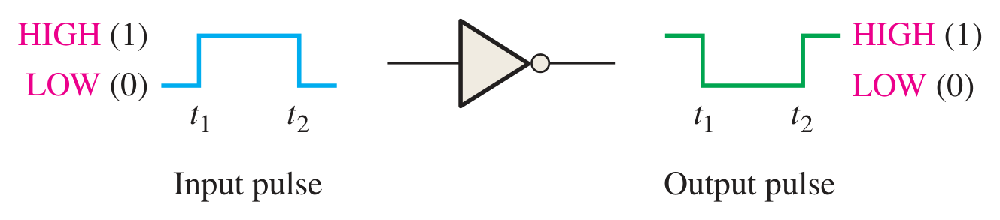
รูปที่ 3.2 แสดงเอาต์พุตของอินเวอร์เตอร์สำหรับสัญญาณ pulse ด้านอินพุต โดยจุดเวลา t1 และ t2 ของรูปคลื่น pulse ทั้งอินพุตและเอาต์พุตแสดงจุดเวลาที่สอดคล้องกัน เพื่อบอกว่าเมื่อระดับสัญญาณก่อนหน้าเวลา t1 ทางด้านอินพุตมีค่าเป็น LOW ในช่วงเวลาเดียวกันทางด้านเอาต์พุตจะมีระดับสัญญาณเป็น HIGH แต่เมื่อผ่านจุด t1 ซึ่งเป็นจุดเวลาที่ pulse ยกตัวขึ้นทำให้ระดับสัญญาณทางด้านอินพุตเป็น HIGH อินเวอร์เตอร์ก็จะทำการ inversion ให้ระดับสัญญาณทางด้านเอาต์พุตเป็น LOW ตามหน้าที่ของมัน และเมื่อถึงจุดเวลา t2 pulse ทางอินพุตจะลดระดับสัญญาณลงเป็น LOW ซึ่งทำให้เกิดรูป pulse กลับทางที่ด้านเอาต์พุตดังแสดงในรูป
3.1.4 ผังเวลา (Timing Diagrams)
ผังเวลา เป็นกราฟที่แสดงความสัมพันธ์ระหว่างรูปคลื่นตั้งแต่ 2 รูปคลื่นขึ้นไปที่เกี่ยวข้องซึ่งกันและกัน โดยมีฐานของเวลาเป็นจุดอ้างอิง ยกตัวอย่างสัญญาณ pulse ด้านอินพุตและเอาต์พุตในรูปที่ 3.2 เมื่อนำมาวางบนแกนเวลาเดียวกัน ก็จะทำให้เราเห็นความสัมพันธ์ระหว่างอินพุตและเอาต์พุตที่ได้จากการปฏิบัติการลอจิก ซึ่งในรูปที่ 3.2 คือการทำงานของอินเวอร์เตอร์ ดังจะเห็นได้จากรูปที่ 3.3

รูปที่ 3.4 เป็นรูปคลื่นสัญญาณที่จะนำเข้าทางอินพุตของอินเวอร์เตอร์ จงวาดรูปคลื่นสัญญาณทางด้านเอาต์พุตที่ได้จากการปฏิบัติการของอินเวอร์เตอร์ในแบบของผังเวลาให้ถูกต้อง และจากรูปของอินเวอร์เตอร์ที่กำหนดไว้ จงบอกว่าสถานะของเอาต์พุตจะ active ที่ค่า 0 หรือ 1
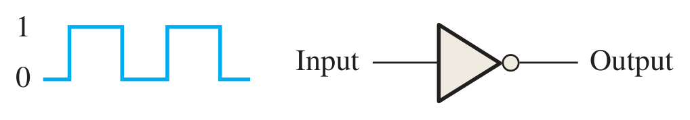
แสดงวิธีทำ
จากโจทย์และสัญญาณที่เข้าทางอินพุตของอินเวอร์เตอร์ เราจะได้รูปคลื่นทางด้านเอาต์พุตเป็นรูปคลื่นที่มีระดับสัญญาณตรงกันข้ามกับอินพุตทุกประการ โดยวาดผังเวลาได้ดังรูปข้างล่างนี้ สำหรับ สถานะของเอาต์พุตจะเป็น active ที่ค่า 0
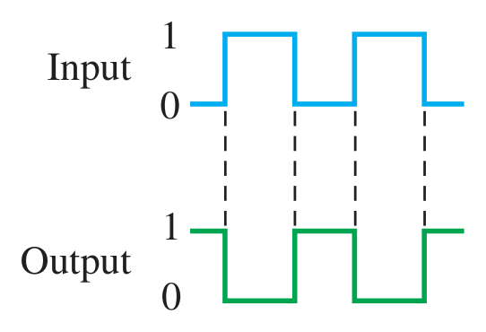
3.1.5 การแสดงสมการลอจิกของอินเวอร์เตอร์ (Logic Expression for an Inverter)
สมการลอจิกของอินเวอร์เตอร์สามารถแสดงได้เป็น
ตัวแปรอินพุตคือ A และตัวแปรเอาต์พุตคือ X การเขียนสมการลักษณะนี้เป็นการบ่งว่าเอาต์พุตเป็นค่าตรงกันข้ามกับอินพุต (complement) ดังนั้น เมื่อ A = 0 จะได้ X = 1 และถ้า A = 1 จะได้ X = 0 สำหรับตัวแปรที่เป็น complement A นั้น เราอ่านว่า “เอบาร์” (A bar) หรือ “น็อตเอ” (not A) ก็ได้ รูปที่ 3.5 แสดงการกลับค่าของอินเวอร์เตอร์พร้อมการเขียนสมการลอจิกของมัน
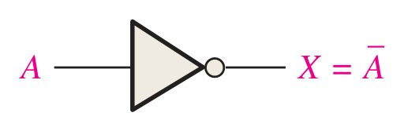
3.1.6 การประยุกต์ใช้อินเวอร์เตอร์
รูปที่ 3.6 แสดงวงจรที่ใช้สำหรับหา 1’s complement ของเลขไบนารีขนาด 8 บิต โดยตัวเลขดังกล่าวจะป้อนเข้าทางด้านอินพุตของวงจร แล้วเราจะได้ 1’s complement ของเลขนั้นทางเอาต์พุต

3.2 AND gate
คำว่า gate ในต่อไปนี้จะหมายถึงวงจรที่ใช้ในการปฏิบัติการทางลอจิกพื้นฐาน สำหรับ AND gate จะมีสัญลักษณ์มาตรฐานที่ใช้กันดังที่เห็นในรูปที่ 3.7
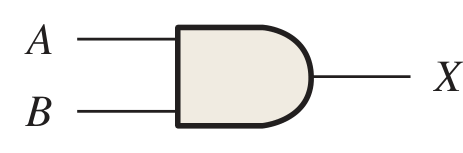
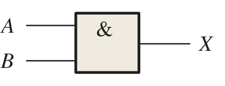
AND gate สามารถมีจำนวนอินพุตได้ตั้งแต่ 2 อินพุตขึ้นไป
3.2.1 การปฏิบัติการของ AND gate
เอาต์พุตที่ได้จาก AND gate จะเป็น HIGH (1) ได้กรณีเดียว คือเมื่อสัญญาณอินพุตทุกสัญญาณเป็น HIGH เหมือนกันหมดเท่านั้น ดังนั้นเมื่อสัญญาณอินพุตตัวใดตัวหนึ่งหรือทุกตัวมีค่าเป็น LOW จะทำให้เอาต์พุตเป็น LOW ทั้งสิ้น ดังจะเห็นได้จากรูปที่ 3.8 ซึ่งแสดง AND gate ขนาด 2 อินพุต โดยแต่ละอินพุตมีตัวอักษรแสดงตัวแปรอินพุตเป็น A และ B ซึ่งมีกรณีที่เป็นไปได้อยู่ 4 กรณี และตัวแปรเอาต์พุต X จะมีค่าเป็น HIGH (หรือ true) เพียงกรณีเดียวเท่านั้น คือเมื่อ A และ B เป็น HIGH ทั้งคู่

3.2.2 ตารางค่าความจริงของ AND gate
ตารางที่ 3.2 เป็นตารางค่าความจริงของ AND gate ขนาด 2 อินพุต โดยเราจะแทน HIGH ด้วย 1 และแทน LOW ด้วย 0
| อินพุต | เอาต์พุต | |
|---|---|---|
| A | B | X |
| 0 | 0 | 0 |
| 0 | 1 | 0 |
| 1 | 0 | 0 |
| 1 | 1 | 1 |
เราสามารถหาจำนวนกรณีที่เกิดขึ้นได้จากการ combination ของจำนวนอินพุตของ gate ใด ๆ ได้จากสูตรต่อไปนี้
โดยที่ N คือจำนวนกรณีที่เกิดขึ้นได้จากการ combination กันของจำนวนอินพุต n ดังนั้นเราจะได้ว่า
(I) จงสร้างตารางค่าความจริงของ AND gate ขนาด 3 อินพุต
(II) จงหาจำนวนกรณีที่จะเกิดขึ้นได้ของ AND gate ขนาด 4 อินพุต
แสดงวิธีทำ
(I) ก่อนอื่นต้องหาว่า AND gate ขนาด 3 อินพุตจะมีกรณีของอินพุตที่ combination กันเป็นจำนวนเท่าใด จากสูตร N = 2n ซึ่ง n = 3 ดังนั้นกรณีที่เป็นไปได้จะเท่ากับ 23 ซึ่งมีค่าเท่ากับ 8 เราจึงต้องสร้างตารางค่าความจริงของ AND gate ขนาด 3 อินพุตที่ประกอบด้วยกรณีทางด้านอินพุตจำนวน 8 กรณี ได้ดังต่อไปนี้
| อินพุต | เอาต์พุต | ||
|---|---|---|---|
| A | B | C | X |
| 0 | 0 | 0 | 0 |
| 0 | 0 | 1 | 0 |
| 0 | 1 | 0 | 0 |
| 0 | 1 | 1 | 0 |
| 1 | 0 | 0 | 0 |
| 1 | 0 | 1 | 0 |
| 1 | 1 | 0 | 0 |
| 1 | 1 | 1 | 1 |
(II) N = 24 = 16 ดังนั้น AND gate ขนาด 4 อินพุตจะมีกรณีที่เป็นไปได้ของอินพุตที่ combination กัน 16 กรณี
3.2.3 การปฏิบัติการของ AND gate กับอินพุตที่เป็นรูปคลื่น
ในการทำงานจริงของวงจร สัญญาณอินพุตมักไม่ได้หยุดนิ่งอยู่ที่ระดับสัญญาณใดระดับหนึ่ง แต่มักเป็นสัญญาณที่เปลี่ยนแปลงระหว่างระดับลอจิก HIGH กับ LOW ดังตัวอย่างต่อไปนี้ ซึ่งแสดงให้เห็นว่าเมื่อสัญญาณอินพุตมีการเปลี่ยนแปลงไปมาที่ขาสัญญาณอินพุต AND gate ก็จะตอบสนองต่อสัญญาณอินพุตนั้น ๆ ตามหน้าที่ของมัน โดยระดับสัญญาณเอาต์พุตจะเปลี่ยนแปลงไปตามหลักทางลอจิกที่ได้กล่าวไปแล้วข้างต้น
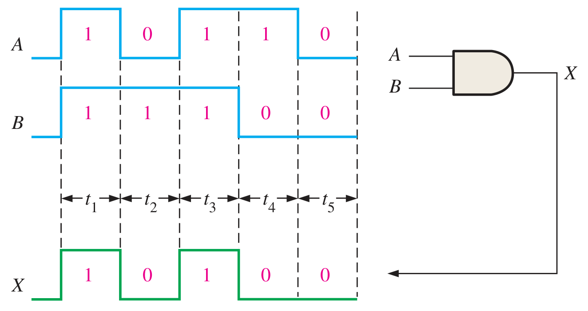
จากรูปจะเห็นว่าสัญญาณอินพุต A และ B มีการเปลี่ยนแปลงตามช่วงเวลาต่าง ๆ ซึ่งแต่ละการเปลี่ยนแปลงจะส่งผลต่อเอาต์พุต โดยเอาต์พุตจะเป็น HIGH (1) เฉพาะกรณีที่ทั้ง A และ B มีค่าสัญญาณเป็น HIGH เท่านั้น ซึ่งได้แก่ช่วงเวลา t1 และ t3 นอกนั้นจะได้ผลลัพธ์ X เป็น LOW (0) ทั้งสิ้น และสิ่งที่เราเห็นเป็นการเปลี่ยนแปลงของรูปสัญญาณไปตามเวลานี้เรียกว่า ผังเวลา (timing diagram)
ถ้าสัญญาณอินพุต A และ B มีรูปคลื่นดังรูปที่ 3.10 ถูกนำเข้าทางอินพุตของ AND gate ขนาด 2 อินพุต จะทำให้เกิดรูปสัญญาณแบบใดทางด้านเอาต์พุต
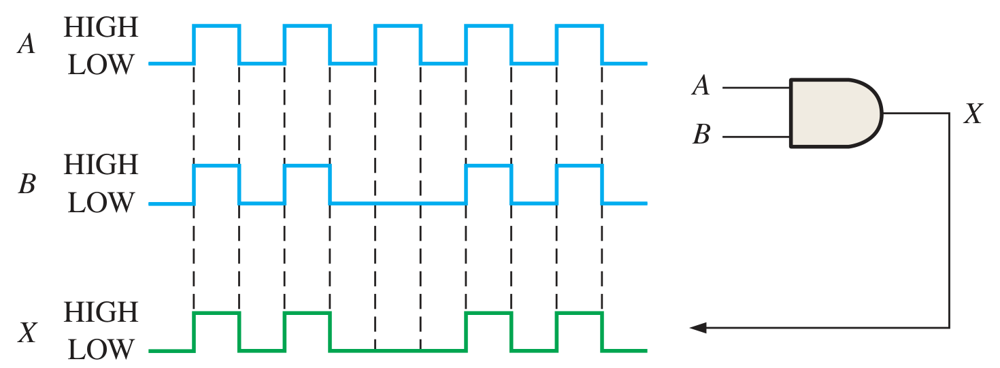
แสดงวิธีทำ
เนื่องจากเป็น AND gate สัญญาณทางด้านเอาต์พุต X จะเป็น HIGH (1) เฉพาะกรณีที่สัญญาณอินพุต A และ B เป็น HIGH เท่านั้น ซึ่งมีอยู่เพียง 4 ช่วงเวลาเท่านั้น ดังรูปคลื่น X ในรูปที่ 3.10
โปรดจำไว้ว่า เมื่อเราวิเคราะห์หาผลการปฏิบัติการของ AND gate ในรูปแบบของรูปคลื่น จะต้องพิจารณาทุก ๆ กรณี ในทุก ๆ การเปลี่ยนแปลง และในทุก ๆ ช่วงเวลาอย่างถี่ถ้วน ดังที่เราจะเห็นในตัวอย่างที่ 3.4 และ 3.5
สำหรับรูปคลื่น A และ B ที่ป้อนเข้าทางอินพุตดังที่เห็นในรูปที่ 3.11 เราจะได้รูปคลื่นเอาต์พุตที่ตอบสนองต่อการเปลี่ยนแปลงของอินพุตดังกล่าวอย่างไร
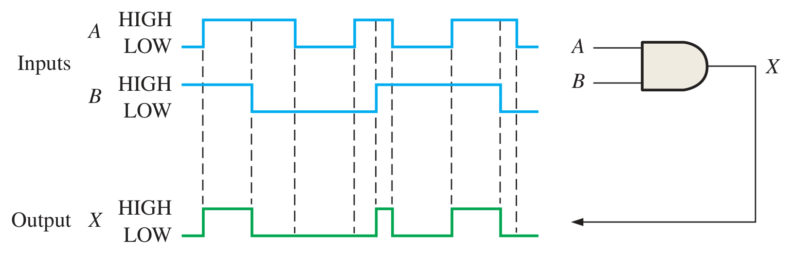
แสดงวิธีทำ
รูปสัญญาณเอาต์พุตจะมีระดับ HIGH ก็ต่อเมื่อสัญญาณอินพุตที่เข้ามาจาก A และ B เป็น HIGH พร้อมกันเท่านั้น (ได้ 3 ช่วงเวลา ดังรูปคลื่น X ในรูปที่ 3.11) สำหรับช่วงเวลาอื่น ๆ เอาต์พุตจะเป็น LOW ทั้งสิ้น
สำหรับ AND gate ขนาด 3 อินพุต จงหาว่ารูปสัญญาณเอาต์พุตจะเป็นอย่างไร เมื่อรูปสัญญาณอินพุตเป็นดังที่เห็นในรูปที่ 3.12
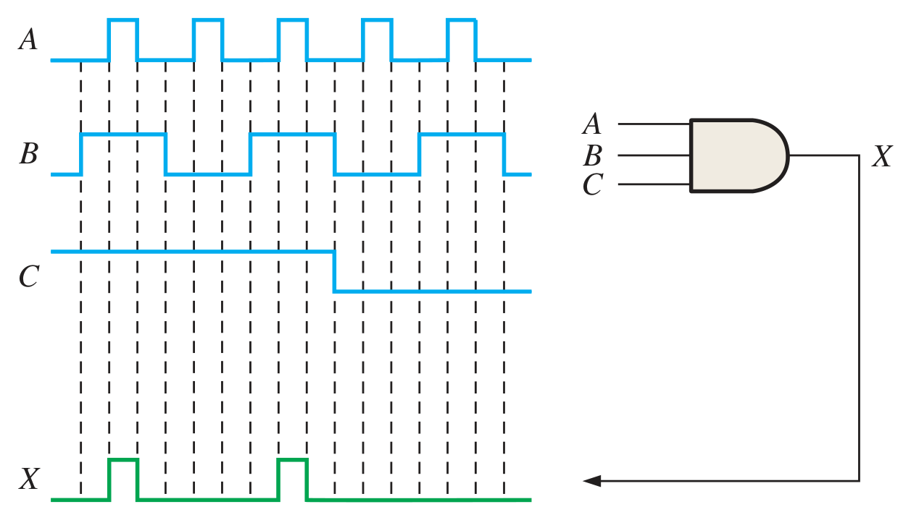
แสดงวิธีทำ
รูปสัญญาณเอาต์พุตจะมีระดับ HIGH ก็ต่อเมื่อสัญญาณอินพุตที่เข้ามาจาก A, B และ C เป็น HIGH พร้อมกันเท่านั้น (ได้ 2 ช่วงเวลา ดังรูปคลื่น X ในรูปที่ 3.12) สำหรับช่วงเวลาอื่น ๆ เอาต์พุตจะเป็น LOW ทั้งสิ้น
3.2.4 การแสดงสมการลอจิกของ AND gate
สำหรับการแสดงสมการลอจิกของ AND gate แบบ 2 ตัวแปร เราจะใช้เครื่องหมาย dot คั่นระหว่าง 2 ตัวแปรนั้น เช่น A · B หรือเพื่อความสะดวกอาจเขียนตัวแปรทั้งสองติดกันโดยไม่ต้องมี dot คั่นกลางก็ได้ เช่น AB
การคูณแบบบูลีน (Boolean Multiplication) ใช้กฎเกณฑ์การคูณเลขไบนารีดังที่เคยกล่าวไปแล้ว ซึ่งจะได้ผลลัพธ์ดังต่อไปนี้
ดังนั้นการคูณแบบบูลีนจะได้ผลลัพธ์แบบเดียวกับฟังก์ชันของ AND นั่นเอง
ปฏิบัติการของ AND gate ขนาด 2 ตัวแปร ที่มี A และ B เป็นอินพุต และมีตัวแปร X เป็นเอาต์พุต สามารถเขียนสมการลอจิกได้ดังต่อไปนี้
หรือเขียนให้ง่าย ๆ ก็คือ
รูปที่ 3.13 (ก) แสดงสัญลักษณ์ทางลอจิกของ AND gate ที่มีตัวแปรอินพุต 2 ตัว และมีตัวแปรเอาต์พุตดังที่แสดงในรูป
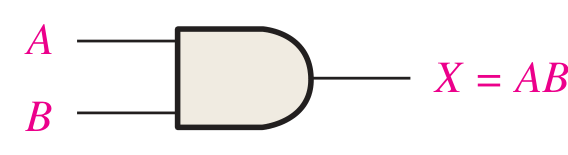
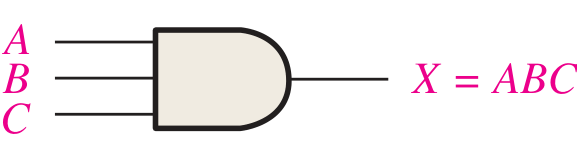
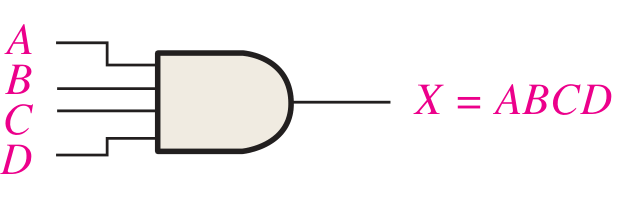
จะเห็นว่า AND gate สามารถมีอินพุตมากกว่า 2 อินพุต ดังนั้นเราควรอภิปรายกรณีที่จำนวนอินพุตมีมากกว่า 2 อินพุต เพื่อพิจารณาปฏิบัติการของ AND gate จากพื้นฐานที่ได้เรียนมาข้างต้น
3.2.5 การประยุกต์ใช้ AND gate
เราสามารถนำ AND gate มาประยุกต์ใช้งานได้หลากหลาย ตัวอย่างหนึ่งที่เข้าใจได้ง่ายได้แก่ ระบบเตือนการคาดเข็มขัดนิรภัยในรถยนต์ ดังที่เห็นในรูปที่ 3.14 ถ้าเราเคยขับขี่รถยนต์ที่มีเข็มขัดนิรภัย เราจะพบว่าถ้าผู้ขับขี่สตาร์ทเครื่องโดยไม่คาดเข็มขัดนิรภัย จะมีเสียงดังเพื่อเตือนให้ผู้ขับขี่คาดเข็มขัด มิฉะนั้นเสียงก็จะดังไม่หยุดและน่ารำคาญ จนผู้ขับขี่ต้องยอมคาดเข็มขัดนิรภัยเพื่อความปลอดภัย

จากรูปจะเห็นว่าวงจรกำเนิดเสียงต่ออยู่กับเอาต์พุตของ AND gate ขนาด 3 อินพุตที่มีตัวแปร A, B และ C ถ้าต้องการให้เกิดเสียงดัง ทางด้านเอาต์พุตจะต้องป้อนระดับสัญญาณลอจิกที่เป็น HIGH และเสียงจะดับลงก็ต่อเมื่อสัญญาณเอาต์พุตของ AND gate เป็น LOW
สำหรับด้านอินพุต A จะเป็นจุดต่อกับสวิตช์กุญแจปิด/เปิดเครื่องยนต์ ในกรณีที่ไม่ได้หมุนกุญแจเพื่อให้เครื่องยนต์ทำงาน ขาสัญญาณนี้จะให้ระดับสัญญาณ LOW ซึ่งจะไม่สามารถทำให้วงจรกำเนิดเสียงทำงานได้ ไม่ว่าอีกสองอินพุตจะอยู่ในสถานะใดก็ตาม แต่เมื่อใดที่มีการบิดกุญแจเพื่อสตาร์ทเครื่องยนต์ สัญญาณอินพุตนี้จะมีระดับเป็น HIGH ซึ่งจะถูกป้อนเข้าไปเป็นอินพุตหนึ่งของ AND gate ทั้งนี้วงจรกำเนิดเสียงเตือนจะทำงานหรือไม่ ขึ้นอยู่กับเงื่อนไขของอีกสองอินพุตคือ B และ C ซึ่งจะกล่าวถึงต่อไป
อินพุต B จะต่อกับช่องเสียบเข็มขัดนิรภัย ถ้าไม่มีการเสียบเข็มขัดอยู่ ที่จุด B นี้จะมีสัญญาณลอจิกเป็น HIGH แต่ถ้ามีการเสียบอยู่ก็จะให้สัญญาณลอจิกเป็น LOW จึงชัดเจนว่าไม่ว่า A หรือ C จะมีระดับสัญญาณใดก็ตาม ถ้ามีการเสียบเข็มขัดนิรภัยลงในช่องเสียบแล้ว จะไม่มีเสียงเตือนหลุดรอดมาอย่างแน่นอน
สำหรับอินพุต C จะเป็นวงจรจับเวลา (timer) ที่จะเริ่มนับเวลาทุกครั้งที่มีการบิดกุญแจสตาร์ทรถ เมื่อเริ่มนับ วงจร timer ที่จุดอินพุต C นี้จะสร้างสัญญาณ HIGH ป้อนเข้าไปยัง AND gate เป็นเวลา 30 วินาที (ดังที่ระบุในรูปที่ 3.14 ว่า Ignition on = HIGH for 30 s) เมื่อครบ 30 วินาทีแล้วจึงกลับเป็น LOW
จากลักษณะของระบบนี้ สัญญาณเสียงเตือนการคาดเข็มขัดจะเกิดขึ้นในกรณีที่มีการสตาร์ทเครื่อง (A = HIGH) ภายในเวลา 30 วินาที (C = HIGH) และเข็มขัดนิรภัยไม่ได้ถูกเสียบอยู่กับช่องเสียบ (B = HIGH) เท่านั้น
3.3 OR gate
สัญลักษณ์มาตรฐานของ OR gate ขนาด 2 อินพุตสามารถเขียนได้ดังรูปที่ 3.15
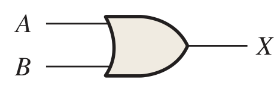
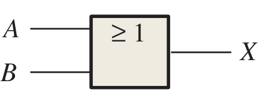
3.3.1 การปฏิบัติการของ OR gate
เอาต์พุตที่ได้จาก OR gate จะเป็น HIGH (1) ในเกือบทุกกรณีของอินพุต ยกเว้นกรณีเดียวเท่านั้น คือกรณีที่อินพุตมีระดับสัญญาณลอจิกเป็น LOW (0) ทั้งหมด รูปที่ 3.16 แสดง OR gate ขนาด 2 อินพุต โดยแต่ละอินพุตมีตัวอักษรแสดงตัวแปรอินพุตเป็น A และ B ซึ่งมีกรณีที่เป็นไปได้อยู่ 4 กรณี และตัวแปรเอาต์พุต X จะมีค่าเป็น LOW (หรือ false) เพียงกรณีเดียวเท่านั้น คือเมื่อ A และ B เป็น LOW ทั้งคู่

3.3.2 ตารางค่าความจริงของ OR gate
ตารางที่ 3.3 เป็นตารางค่าความจริงของ OR gate ขนาด 2 อินพุต โดยเราจะแทน HIGH ด้วย 1 และแทน LOW ด้วย 0
| อินพุต | เอาต์พุต | |
|---|---|---|
| A | B | X |
| 0 | 0 | 0 |
| 0 | 1 | 1 |
| 1 | 0 | 1 |
| 1 | 1 | 1 |
3.3.3 การปฏิบัติการของ OR gate กับอินพุตที่เป็นรูปคลื่น
พิจารณารูปที่ 3.17 ซึ่งแสดงผังเวลาการทำงานของ OR gate ที่ตอบสนองต่อรูปคลื่นสัญญาณที่เข้ามาทางอินพุต A และ B จะเห็นว่าเฉพาะช่วงเวลาก่อน t1 ช่วงเวลา t3 และหลังจากช่วงเวลา t4 เท่านั้นที่สัญญาณลอจิกที่เอาต์พุตเป็น LOW (0) เนื่องจากสัญญาณจาก A และ B เป็น LOW (0) ทั้งคู่
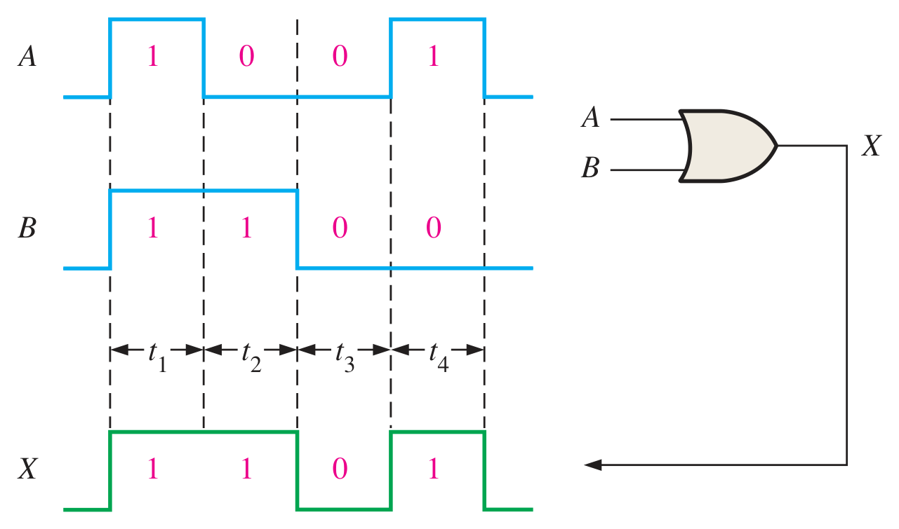
จากรูปที่ 3.18 เมื่อมีอินพุตที่มีรูปคลื่นสัญญาณดังกล่าว จงหารูปคลื่นสัญญาณเอาต์พุต
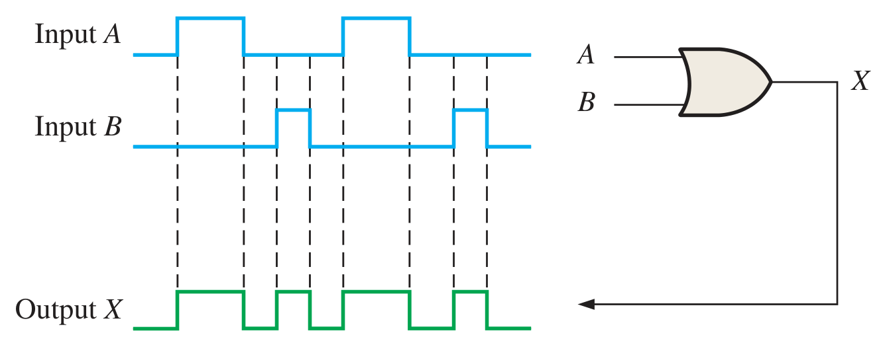
แสดงวิธีทำ
ผลลัพธ์ของสัญญาณเอาต์พุต X จะมีค่าเท่ากับ HIGH เมื่ออินพุต A กับ B ตัวใดตัวหนึ่งหรือทั้งสองตัวมีค่าเป็น HIGH ดังรูปคลื่น X ในผังเวลาของรูปที่ 3.18 ในรูปนี้จะเห็นว่า A กับ B ไม่เคยเป็น HIGH พร้อมกันเลย แต่ก็ยังสามารถทำให้เอาต์พุตเป็น HIGH ได้
จากรูปที่ 3.19 เมื่อมีอินพุตที่มีรูปคลื่นสัญญาณดังกล่าว จงหารูปคลื่นสัญญาณเอาต์พุตที่ตอบสนองต่อการทำงานของ OR gate ให้ถูกต้อง
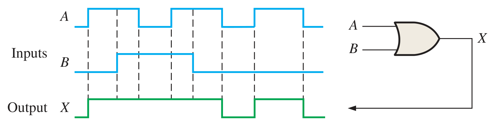
แสดงเฉลย
รูปคลื่นเอาต์พุต X แสดงอยู่ในแถวล่างสุดของรูปที่ 3.19
จากรูปที่ 3.20 เป็นรูปคลื่นสัญญาณขนาด 3 ตัวแปรที่ป้อนเข้ามายัง OR gate จงสร้างรูปสัญญาณเอาต์พุตให้ถูกต้อง
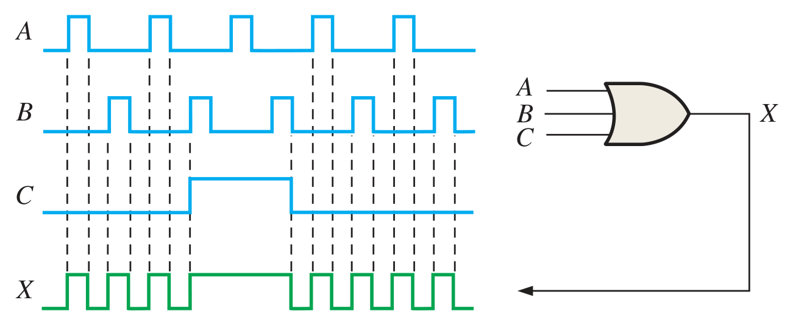
แสดงเฉลย
รูปคลื่นเอาต์พุต X แสดงอยู่ในแถวล่างสุดของรูปที่ 3.20
3.3.4 การแสดงสมการลอจิกของ OR gate
ฟังก์ชันลอจิกของ OR ที่มีสองตัวแปรสามารถเขียนในรูปสมการทางคณิตศาสตร์ด้วยการใช้เครื่องหมาย + ระหว่างตัวแปรทั้งสองได้ เช่น A + B
การบวกแบบบูลีน มีหลักเกณฑ์พื้นฐานดังต่อไปนี้
ซึ่งจะเห็นได้ว่าการบวกแบบบูลีนเหมือนกับฟังก์ชัน OR โดยการบวกแบบบูลีนแตกต่างจากการบวกเลขไบนารีตรงการบวก 1 สองตัวเข้าด้วยกัน คือในการบวกแบบบูลีนจะไม่มีตัวทด
ปฏิบัติการของ OR gate ขนาด 2 อินพุต: เมื่อให้ตัวแปรอินพุตหนึ่งคือ A และอีกตัวแปรอินพุตหนึ่งคือ B และกำหนดให้ X เป็นตัวแปรเอาต์พุต เราสามารถเขียนเป็นสมการบูลีนได้ว่า
รูปที่ 3.21 (ก) แสดงสัญลักษณ์ OR gate ที่มีตัวแปรอินพุต 2 ตัวและตัวแปรเอาต์พุตที่กำกับชื่อไว้
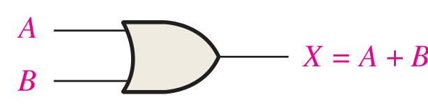
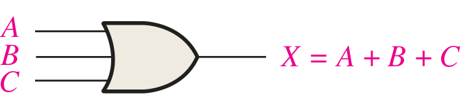
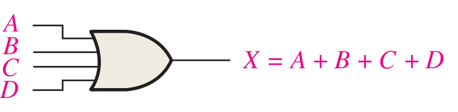
เช่นเดียวกับ AND gate ที่สามารถมีอินพุตได้มากกว่า 2 อินพุต OR gate ที่มี 3 ตัวแปรอินพุตสามารถเขียนสมการบูลีนได้เป็น X = A + B + C และถ้ามี 4 ตัวแปร สมการบูลีนก็เขียนได้เป็น X = A + B + C + D ดังที่เห็นในรูปที่ 3.21 (ข) และ (ค) ตามลำดับ
3.3.5 การประยุกต์ใช้ OR gate
เราสามารถประยุกต์ใช้ OR gate สำหรับ ระบบตรวจจับและเตือนภัยกรณีมีการบุกรุกประตู/หน้าต่างที่บ้าน ดังแสดงในรูปที่ 3.22 ซึ่งสมมติสถานการณ์ว่ามีห้องหนึ่งในบ้านที่มี 1 ประตูกับ 2 หน้าต่าง ติดเซนเซอร์สวิตช์แม่เหล็กไว้กับทุก ๆ บานประตูและหน้าต่าง โดยเซนเซอร์จะส่งระดับสัญญาณลอจิกเป็น HIGH (1) เมื่อบานประตู/หน้าต่างนั้น ๆ ถูกเปิดออก แต่จะเป็นสัญญาณ LOW (0) เมื่อบานนั้น ๆ ปิดอยู่ ดังนั้นเมื่อระบบรักษาความปลอดภัยนี้ถูกสั่งให้ทำงาน การเปิดประตู/หน้าต่างบานใดบานหนึ่งที่เชื่อมโยงกับระบบจะทำให้เกิดสัญญาณลอจิก HIGH ที่เอาต์พุตของ OR gate ซึ่งจะป้อนสัญญาณไปสั่งให้วงจรกำเนิดเสียงแจ้งเตือนดังขึ้นทันที และจะเงียบลงเมื่อทุกบานปิดอยู่เท่านั้น
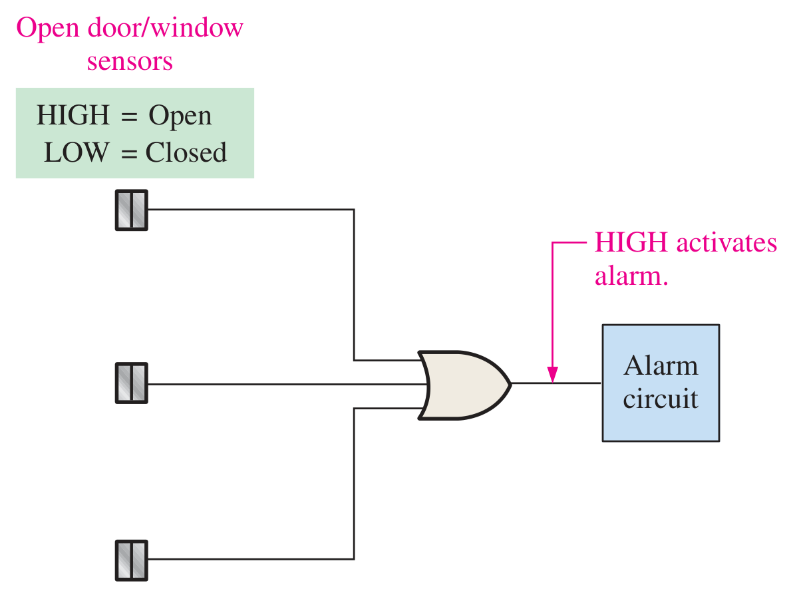
3.4 NAND gate
NAND gate เป็นวงจรเกทที่ผนวกฟังก์ชันของ AND และ NOT เข้าด้วยกัน ผลลัพธ์ของมันก็คือ complement ของ AND นั่นเอง สัญลักษณ์ลอจิกมาตรฐานสำหรับ NAND gate ขนาด 2 อินพุตและวงจรเทียบเท่าของมัน (AND กับ NOT เชื่อมต่อกัน) แสดงในรูปที่ 3.23

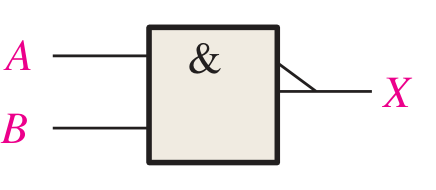
3.4.1 การปฏิบัติการของ NAND gate
NAND gate จะให้ เอาต์พุตเป็น LOW (0) กรณีเดียว คือเมื่อ ทุกอินพุตเป็น HIGH (1) แต่เมื่ออินพุตขาใดขาหนึ่งหรือทั้งสองขาเป็น LOW เอาต์พุตที่ได้จะเป็น HIGH สำหรับ NAND ขนาด 2 อินพุตจะมีกรณีที่เกิดขึ้น 4 กรณีดังที่เห็นในรูปที่ 3.24 ซึ่งมีอินพุต A และ B และมีเอาต์พุตเป็น X ซึ่งเขียนเป็นตารางค่าความจริงได้ดังตารางที่ 3.4
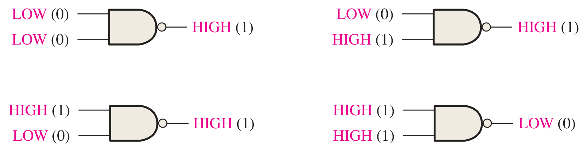
| อินพุต | เอาต์พุต | |
|---|---|---|
| A | B | X |
| 0 | 0 | 1 |
| 0 | 1 | 1 |
| 1 | 0 | 1 |
| 1 | 1 | 0 |
3.4.2 การปฏิบัติการของ NAND gate กับอินพุตที่เป็นรูปคลื่น
ให้พิจารณาตัวอย่างของสัญญาณ pulse ที่เกิดขึ้นจาก NAND gate เพื่อทำความเข้าใจการปฏิบัติการของมัน ซึ่งจากตารางค่าความจริงที่ได้กล่าวไป จุดสำคัญก็คือสัญญาณเอาต์พุตจะเป็น LOW ในกรณีเดียว คือเมื่ออินพุตทุกขาเป็น HIGH
ถ้าคลื่นสัญญาณ A และ B เป็นดังที่แสดงในรูปที่ 3.25 จงหารูปคลื่นสัญญาณเอาต์พุตของ NAND gate
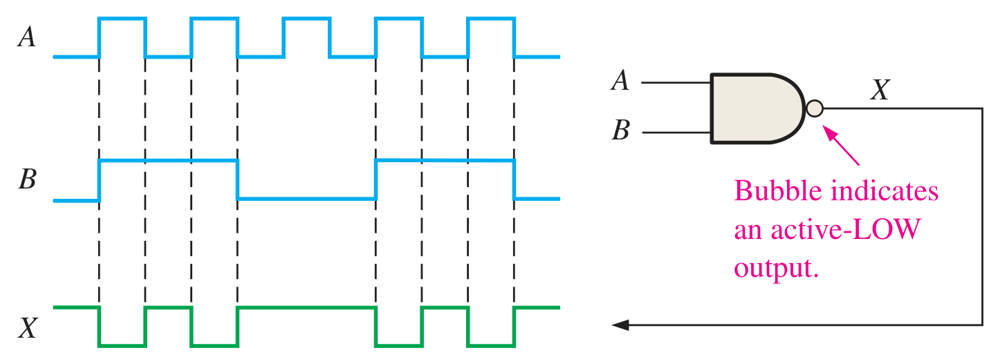
แสดงวิธีทำ
จากตารางค่าความจริง เอาต์พุตของ NAND gate จะเป็น LOW ในกรณีเดียวคือเมื่อ A และ B เป็น HIGH ทั้งคู่ และจะเป็น HIGH เมื่อ A หรือ B ตัวใดตัวหนึ่งเป็น LOW จะได้ผลลัพธ์แสดงเป็นผังเวลาดังรูปคลื่น X ในรูปที่ 3.25 จากตรงนี้ขอให้อภิปรายเพื่อทำความเข้าใจกับคำว่า active-LOW
กรณีที่เป็น NAND ขนาด 3 อินพุต และมีรูปคลื่นสัญญาณอินพุตเป็นดังรูปที่ 3.26 จงหารูปคลื่นสัญญาณด้านเอาต์พุตที่ถูกต้อง
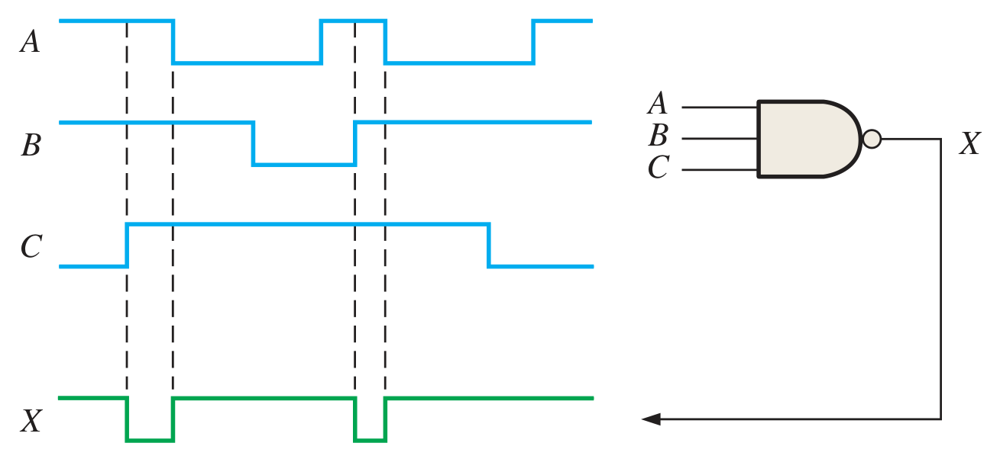
แสดงเฉลย
รูปคลื่นเอาต์พุต X แสดงอยู่ในแถวล่างสุดของรูปที่ 3.26
3.4.3 Negative-OR วงจรที่เทียบเท่ากับ NAND gate
รูปที่ 3.27 แสดงการเทียบเท่ากันระหว่างวงจรที่เป็น Negative-OR กับ NAND gate

จากรูปจะเห็นว่าวงจร Negative-OR ก็คือ OR gate ที่มีอินพุตแบบ active-LOW เนื่องจากมีฟองน้ำกำกับอยู่ ดังนั้นถ้าขาอินพุตเป็น A และ B ก่อนที่สัญญาณจะถูกป้อนเข้าไปทำงานที่ OR gate จะต้องถูก complement จาก A และ B ก่อน เมื่อเขียนเปรียบเทียบตารางค่าความจริงระหว่าง NAND gate กับวงจร Negative-OR จะได้ดังต่อไปนี้
| NAND gate | ||
|---|---|---|
| อินพุต | เอาต์พุต | |
| A | B | X |
| 0 | 0 | 1 |
| 0 | 1 | 1 |
| 1 | 0 | 1 |
| 1 | 1 | 0 |
| Negative-OR | ||||
|---|---|---|---|---|
| อินพุต | เอาต์พุต | |||
| A | B | A | B | X |
| 0 | 0 | 1 | 1 | 1 |
| 0 | 1 | 1 | 0 | 1 |
| 1 | 0 | 0 | 1 | 1 |
| 1 | 1 | 0 | 0 | 0 |
จะเห็นว่าผลลัพธ์ที่ได้เทียบเท่ากันทุกประการ ดังนั้นเราจึงสามารถสรุปได้ว่าวงจร Negative-OR ทำงานเทียบเท่ากับ NAND gate
3.4.4 การแสดงสมการลอจิกของ NAND gate
สมการบูลีนของ NAND gate ขนาด 2 อินพุตสามารถเขียนได้เป็น
3.5 NOR gate
NOR gate ขนาด 2 อินพุตมีสัญลักษณ์มาตรฐานดังที่เห็นในรูปที่ 3.28

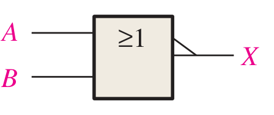
3.5.1 การปฏิบัติการของ NOR gate
NOR gate จะให้ เอาต์พุตเป็น LOW (0) เมื่ออินพุตขาใดขาหนึ่งเป็น HIGH (1) และจะมีกรณีเดียวเท่านั้นที่ได้เอาต์พุตเป็น HIGH คือเมื่อทุกขาอินพุตเป็น LOW รูปที่ 3.29 แสดงปฏิบัติการของ NOR gate ขนาด 2 อินพุต A กับ B และมีเอาต์พุตเป็น X สำหรับตารางค่าความจริงแสดงไว้ในตารางที่ 3.6
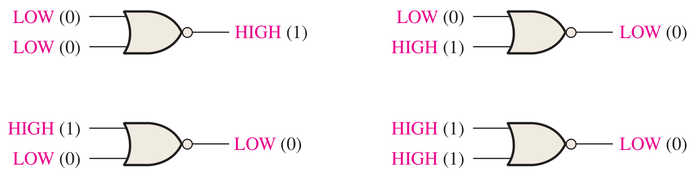
| อินพุต | เอาต์พุต | |
|---|---|---|
| A | B | X |
| 0 | 0 | 1 |
| 0 | 1 | 0 |
| 1 | 0 | 0 |
| 1 | 1 | 0 |
3.5.2 การปฏิบัติการของ NOR gate กับอินพุตที่เป็นรูปคลื่น
ให้พิจารณาตัวอย่างของสัญญาณ pulse ที่เกิดขึ้นจาก NOR gate เพื่อทำความเข้าใจการปฏิบัติการของ NOR gate โดยใช้ตารางค่าความจริงเป็นหลักในการพิจารณา
ถ้ารูปคลื่น A และ B ที่เป็นอินพุตของ NOR gate เป็นดังรูปที่ 3.30 จงหารูปคลื่นเอาต์พุตที่ถูกต้อง
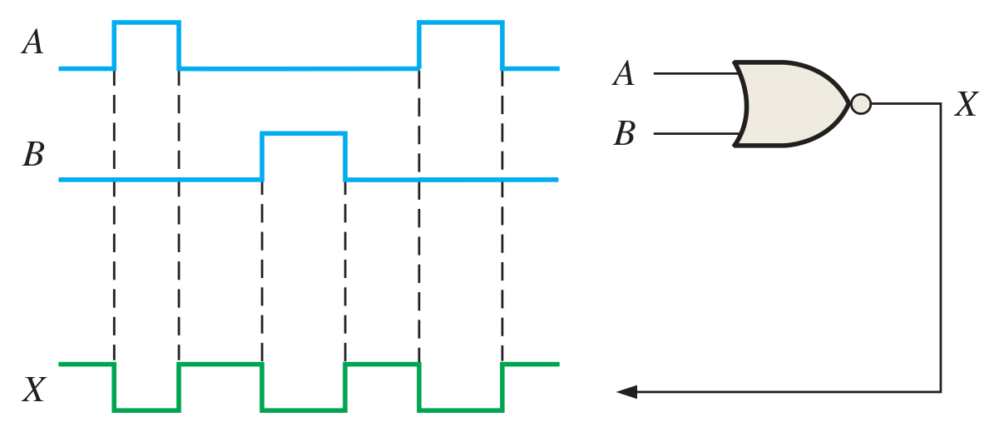
แสดงเฉลย
รูปคลื่นเอาต์พุต X แสดงอยู่ในแถวล่างสุดของรูปที่ 3.30
รูปที่ 3.31 แสดงรูปคลื่นสัญญาณที่ป้อนเข้าไปยัง NOR gate ขนาด 3 อินพุต จงเขียนผังเวลาที่ถูกต้องของสัญญาณเอาต์พุต
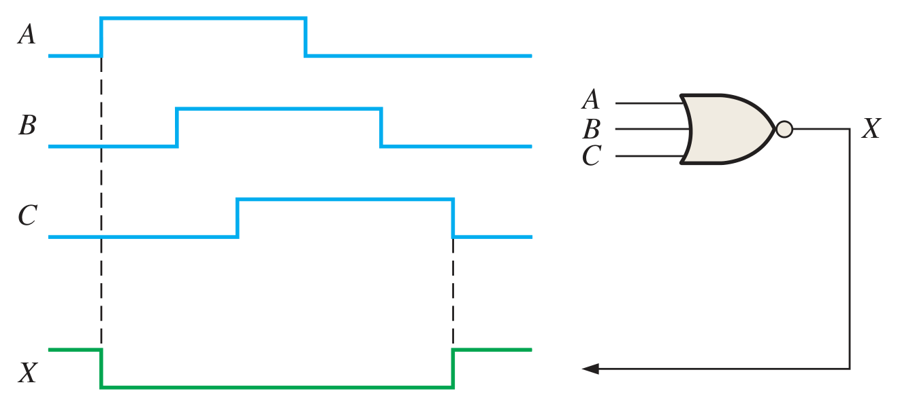
แสดงเฉลย
รูปคลื่นเอาต์พุต X แสดงอยู่ในแถวล่างสุดของรูปที่ 3.31
3.5.3 Negative-AND วงจรที่เทียบเท่ากับ NOR gate
รูปที่ 3.32 แสดงการเทียบเท่ากันระหว่างวงจรที่เป็น Negative-AND กับ NOR gate

จากรูปจะเห็นว่าวงจร Negative-AND ก็คือ AND gate ที่มีอินพุตแบบ active-LOW เนื่องจากมีฟองน้ำกำกับอยู่ ดังนั้นถ้าขาอินพุตเป็น A และ B ก่อนที่สัญญาณจะถูกป้อนเข้าไปทำงานที่ AND gate จะต้องถูก complement จาก A และ B ก่อน เมื่อเขียนเปรียบเทียบตารางค่าความจริงระหว่าง NOR gate กับวงจร Negative-AND จะได้ดังต่อไปนี้
| NOR gate | ||
|---|---|---|
| อินพุต | เอาต์พุต | |
| A | B | X |
| 0 | 0 | 1 |
| 0 | 1 | 0 |
| 1 | 0 | 0 |
| 1 | 1 | 0 |
| Negative-AND | ||||
|---|---|---|---|---|
| อินพุต | เอาต์พุต | |||
| A | B | A | B | X |
| 0 | 0 | 1 | 1 | 1 |
| 0 | 1 | 1 | 0 | 0 |
| 1 | 0 | 0 | 1 | 0 |
| 1 | 1 | 0 | 0 | 0 |
จะเห็นว่าผลลัพธ์ที่ได้เทียบเท่ากันทุกประการ ดังนั้นเราจึงสามารถสรุปได้ว่าวงจร Negative-AND ทำงานเทียบเท่ากับ NOR gate
3.5.4 การแสดงสมการลอจิกของ NOR gate
สมการบูลีนของ NOR gate ขนาด 2 อินพุตสามารถเขียนได้เป็น
3.6 XOR (Exclusive-OR) และ XNOR (Exclusive-NOR)
เกททั้งสองชนิดนี้เกิดจากการรวมตัวของเกทอื่น ๆ หลายตัว ทั้งสองเป็นเกทที่มีความสำคัญในการนำไปประยุกต์ใช้กับงานต่าง ๆ เป็นจำนวนมาก และมีสัญลักษณ์ประจำตัวของมันเอง รวมถึงมีสิ่งที่น่าเรียนรู้ ซึ่งจะกล่าวไว้ในหัวข้อย่อยต่อไป
3.6.1 XOR gate
สัญลักษณ์มาตรฐานสำหรับ XOR gate แสดงดังในรูปที่ 3.33 ทั้งนี้ XOR จะเป็นเกทที่มีขนาด 2 อินพุตเท่านั้น

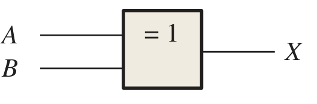
เอาต์พุตของ XOR gate จะเป็น HIGH (1) ในกรณีที่สัญญาณอินพุตทั้งสองเป็นสัญญาณลอจิกที่ตรงกันข้าม รูปที่ 3.34 แสดงกรณีที่เป็นไปได้ 4 กรณีในการปฏิบัติการของ XOR ซึ่งสรุปได้ดังตารางค่าความจริงในตารางที่ 3.8
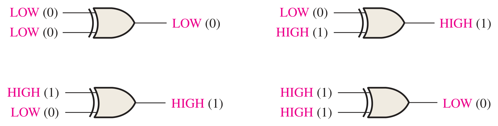
| อินพุต | เอาต์พุต | |
|---|---|---|
| A | B | X |
| 0 | 0 | 0 |
| 0 | 1 | 1 |
| 1 | 0 | 1 |
| 1 | 1 | 0 |
3.6.2 XNOR gate
สัญลักษณ์มาตรฐานสำหรับ XNOR gate แสดงดังในรูปที่ 3.35 ทั้งนี้ XNOR จะเป็นเกทที่มีขนาด 2 อินพุตเท่านั้น

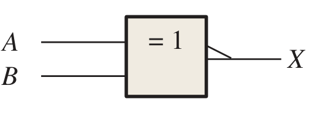
เอาต์พุตของ XNOR gate จะเป็น HIGH (1) ในกรณีที่สัญญาณอินพุตทั้งสองเป็นสัญญาณลอจิกที่เหมือนกัน รูปที่ 3.36 แสดงกรณีที่เป็นไปได้ 4 กรณีในการปฏิบัติการของ XNOR ซึ่งสรุปได้ดังตารางค่าความจริงในตารางที่ 3.9
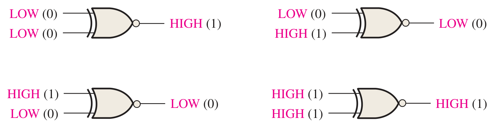
| อินพุต | เอาต์พุต | |
|---|---|---|
| A | B | X |
| 0 | 0 | 1 |
| 0 | 1 | 0 |
| 1 | 0 | 0 |
| 1 | 1 | 1 |
3.6.3 การปฏิบัติการกับอินพุตที่เป็นรูปคลื่น
เช่นเดียวกับเกทอื่น ๆ ที่ได้กล่าวไปแล้วข้างต้น ในส่วนนี้เราจะมาดูปฏิบัติการของ XOR และ XNOR กับคลื่นสัญญาณอินพุตที่เกิดขึ้นในช่วงเวลาต่อเนื่องกัน เริ่มจาก XOR ในรูปที่ 3.37 จะเห็นว่าช่วงเวลา t2 และ t4 เป็นช่วงเวลาที่สัญญาณอินพุต A และ B มีระดับลอจิกตรงกันข้าม ซึ่งทำให้ระดับสัญญาณเอาต์พุต X เป็น HIGH (1) ตามที่ตารางค่าความจริงของ XOR ได้ระบุไว้
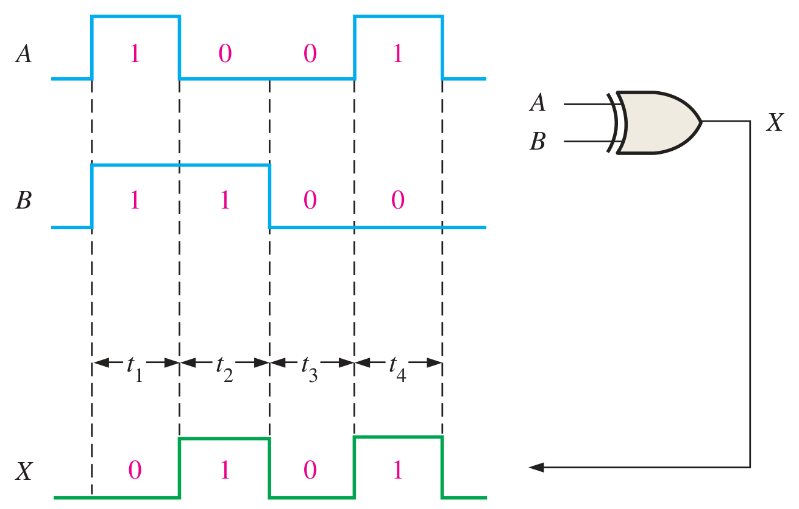
สำหรับรูปที่ 3.38 เป็นการเปรียบเทียบให้เห็นความแตกต่างของการปฏิบัติการระหว่าง XOR กับ XNOR ที่มีต่อรูปคลื่นสัญญาณอินพุตชุดเดียวกัน ซึ่งจะเห็นว่า XOR กับ XNOR ให้ผลลัพธ์ที่ตรงกันข้าม (เป็น complement ซึ่งกันและกัน) ซึ่งสัญลักษณ์มาตรฐานก็บ่งบอกไว้แล้วจากการที่มีฟองน้ำที่ปลายเอาต์พุตของ XNOR หมายความว่าเอาต์พุตของ XNOR เป็น complement ของ XOR นั่นเอง
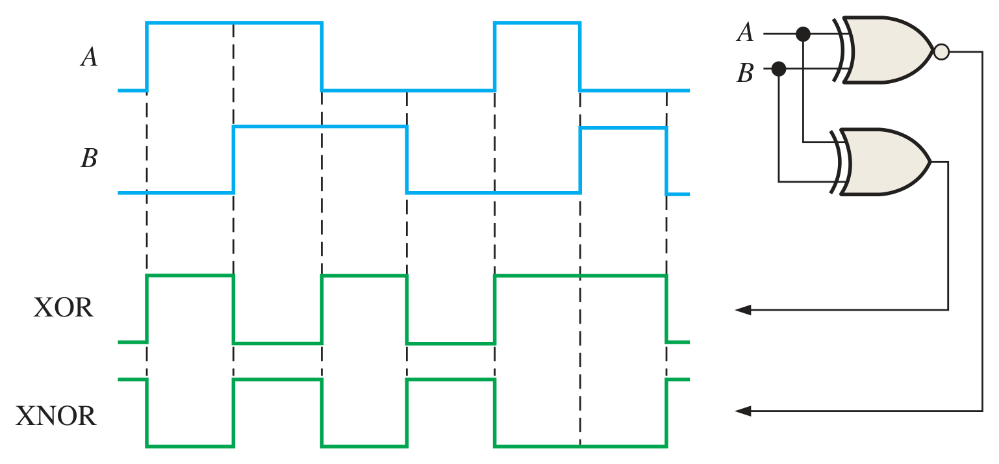
3.6.4 การประยุกต์ใช้งาน
XOR gate สามารถนำไปใช้สร้างวงจรบวกบิต A กับบิต B เข้าด้วยกัน (ผลบวกโดยไม่คิดตัวทด) ได้ ถ้าเราย้อนไปที่บทที่ 2 ในเรื่องกฎพื้นฐานของการบวกเลขไบนารี จะได้ว่า
ถ้าเราพิจารณาเฉพาะผลบวก (sum) โดยไม่สนใจตัวทดที่เกิดขึ้นจากการบวก จะเห็นว่าเราสามารถใช้ XOR ทำเป็นวงจรหาผลบวกของบิต A กับบิต B ได้ ดังจะเห็นจากรูปที่ 3.39 ทั้งนี้วงจรบวกที่สมบูรณ์กว่านี้จะกล่าวถึงต่อไปในบทหลัง ณ ขณะนี้ขอให้เข้าใจการทำงานของ XOR ให้ขึ้นใจไว้ก่อน เพราะจะต้องนำไปใช้เมื่อถึงเรื่องวงจรบวก ซึ่งเป็นวงจรที่สำคัญมากสำหรับระบบดิจิทัลคอมพิวเตอร์
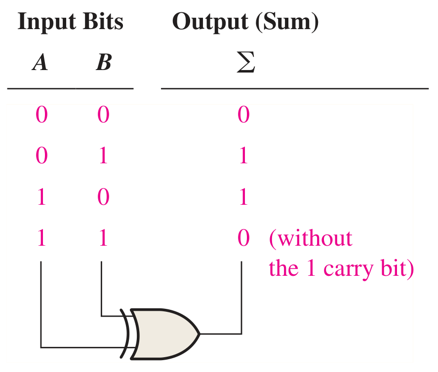
3.7 ตระกูลวงจรรวมดิจิทัลและคุณลักษณะทางไฟฟ้า
หัวข้อที่ผ่านมาได้พิจารณาเกทในแง่ของลอจิกเพียงอย่างเดียว คือมองว่าอินพุตและเอาต์พุตมีค่าเป็น 0 หรือ 1 แต่เมื่อต้องสร้างวงจรจริง เกทเหล่านี้คือวงจรรวม (Integrated Circuit: IC) ที่ทำงานด้วยแรงดันและกระแสไฟฟ้า ผู้ออกแบบจึงต้องรู้ว่าแรงดันเท่าใดถือเป็น HIGH หรือ LOW เกทหนึ่งตัวขับอินพุตอื่นได้กี่ตัว สัญญาณผ่านเกทช้าเพียงใด และใช้กำลังไฟฟ้ามากน้อยเพียงใด ข้อมูลเหล่านี้เรียกว่าคุณลักษณะทางไฟฟ้า (electrical characteristics) ซึ่งระบุไว้ในเอกสารข้อมูล (datasheet) ของไอซีแต่ละเบอร์ หัวข้อนี้จะกล่าวถึงไอซีลอจิกตระกูลที่พบบ่อย คุณลักษณะสำคัญ และหลักการเลือกไอซีให้เหมาะกับระดับแรงดันไฟเลี้ยงและสภาวะแวดล้อมการทำงาน
3.7.1 ไอซีลอจิกแบบฟังก์ชันคงที่และตัวถัง
ไอซีลอจิกแบบฟังก์ชันคงที่ (fixed-function logic IC) คือไอซีที่บรรจุเกทชนิดเดียวกันไว้หลายตัวในตัวถังเดียว เช่น NAND gate ขนาด 2 อินพุตจำนวน 4 ตัว ซึ่งเรียกว่า quad 2-input NAND โดยเกททุกตัวในตัวถังใช้ขาไฟเลี้ยง VCC และขากราวด์ (GND) ร่วมกัน ไอซีกลุ่มนี้เหมาะสำหรับสร้างวงจรขนาดเล็ก ทดลองบนแผงต่อวงจร (breadboard) หรือใช้เป็นวงจรเชื่อมต่อ (glue logic) ระหว่างชิปขนาดใหญ่ ตัวถัง (package) ที่พบบ่อยมีดังนี้
- DIP (Dual In-line Package) ขาเรียงสองแถว ระยะห่างระหว่างขา 2.54 มม. (0.1 นิ้ว) เสียบผ่านรูบนแผ่นวงจร (through-hole) จึงเหมาะกับการทดลองบนแผงต่อวงจร
- SOIC (Small Outline IC) เป็นตัวถังแบบติดตั้งบนผิวหน้าแผ่นวงจร (surface mount) ระยะห่างระหว่างขา 1.27 มม. มีขนาดเล็กกว่า DIP มาก นิยมใช้ในผลิตภัณฑ์จริง
- TSSOP และตัวถังขนาดเล็กอื่น ๆ มีระยะห่างระหว่างขาเพียง 0.65 มม. หรือน้อยกว่า ใช้ในอุปกรณ์ที่ต้องการประหยัดพื้นที่
การนับขาของไอซีเริ่มจากขาที่ 1 ซึ่งอยู่ใกล้รอยบาก (notch) หรือจุดกลมบนตัวถัง แล้วนับทวนเข็มนาฬิกาเมื่อมองจากด้านบน รูปที่ 3.40 แสดงการจัดขาของไอซี 7400 แบบ DIP 14 ขา ซึ่งบรรจุ NAND gate 4 ตัว ขาที่ 14 คือ VCC และขาที่ 7 คือ GND ชื่อขา 1A, 1B และ 1Y หมายถึงอินพุต A, B และเอาต์พุต Y ของเกทตัวที่ 1 ตามลำดับ
ไอซีในอนุกรม 74 ส่วนใหญ่ใช้ตัวเลขฟังก์ชันเดียวกันไม่ว่าจะเป็นตระกูลใด เช่น 74LS00, 74HC00 และ 74LVC00 ล้วนเป็น quad 2-input NAND เหมือนกัน (แต่การจัดขาของบางเบอร์อาจต่างกันเล็กน้อยระหว่างตระกูล ควรตรวจสอบกับ datasheet ทุกครั้ง) ตารางที่ 3.10 แสดงเบอร์ของเกทพื้นฐานที่ได้ศึกษาในบทนี้
| ตัวเลขฟังก์ชัน | ฟังก์ชัน | ตัวเลขฟังก์ชัน | ฟังก์ชัน |
|---|---|---|---|
| 00 | NAND 2 อินพุต × 4 (quad) | 14 | อินเวอร์เตอร์แบบ Schmitt trigger × 6 |
| 02 | NOR 2 อินพุต × 4 | 20 | NAND 4 อินพุต × 2 (dual) |
| 04 | อินเวอร์เตอร์ × 6 (hex) | 27 | NOR 3 อินพุต × 3 |
| 08 | AND 2 อินพุต × 4 | 32 | OR 2 อินพุต × 4 |
| 10 | NAND 3 อินพุต × 3 (triple) | 86 | XOR 2 อินพุต × 4 |
3.7.2 การอ่านรหัสไอซีอนุกรม 74
รหัสของไอซีอนุกรม 74 ประกอบด้วยหลายส่วน แต่ละส่วนบอกข้อมูลที่จำเป็นต่อการเลือกใช้ ตารางที่ 3.11 แยกส่วนประกอบของรหัส SN74LVC00AD เป็นตัวอย่าง ทั้งนี้อักษรนำหน้าและอักษรท้ายรหัสแตกต่างกันไปตามผู้ผลิต แต่ส่วนกลางคือ “74” + ตระกูล + ตัวเลขฟังก์ชัน เป็นรูปแบบที่ใช้ร่วมกันทั่วไป
| ส่วนของรหัส | ตัวอย่าง | ความหมาย |
|---|---|---|
| อักษรนำหน้า (prefix) | SN | รหัสผู้ผลิต (SN = Texas Instruments; ผู้ผลิตอื่นอาจใช้ MC, DM, CD หรือไม่มีอักษรนำหน้า) |
| อนุกรม | 74 | เกรดใช้งานทั่วไป/อุตสาหกรรม (อนุกรม 54 คือเกรดทหาร ใช้งานได้ช่วง −55 ถึง 125 °C) |
| ตระกูล (family) | LVC | เทคโนโลยีของวงจรภายใน ซึ่งกำหนดแรงดันไฟเลี้ยง ระดับลอจิก ความเร็ว และกำลังไฟฟ้า |
| ฟังก์ชัน | 00 | quad 2-input NAND (ตารางที่ 3.10) |
| รุ่นปรับปรุง | A | รุ่นที่ปรับปรุงคุณลักษณะจากรุ่นเดิม (ถ้ามี) |
| ตัวถัง (suffix) | D | ตัวถัง SOIC (สำหรับ TI: N = DIP, D = SOIC, PW = TSSOP) |
ตระกูลที่พบบ่อยในการเรียนและงานออกแบบปัจจุบันได้แก่ 74LS (Low-power Schottky TTL) ซึ่งเป็นตระกูล TTL ที่ใช้กันแพร่หลายในห้องปฏิบัติการ 74HC (High-speed CMOS) 74HCT (High-speed CMOS ที่มีอินพุตเข้ากันได้กับ TTL) และ 74LVC (Low-Voltage CMOS) สำหรับระบบ 3.3 V หรือต่ำกว่า นอกจากนี้ยังมีตระกูลอื่น เช่น 74AC, 74AHC, 74ALVC และ 74AUP ซึ่งมีจุดเด่นด้านความเร็วหรือการประหยัดพลังงานแตกต่างกันไป
3.7.3 TTL และ CMOS: แรงดันไฟเลี้ยงและระดับลอจิก
ไอซีลอจิกแบ่งตามเทคโนโลยีการสร้างได้เป็นสองกลุ่มใหญ่ คือ TTL (Transistor-Transistor Logic) ซึ่งสร้างจากทรานซิสเตอร์ชนิดไบโพลาร์ และ CMOS (Complementary Metal-Oxide-Semiconductor) ซึ่งสร้างจากมอสเฟตชนิด n และ p ทำงานคู่กัน ความแตกต่างที่สำคัญต่อผู้ใช้มีดังนี้
- แรงดันไฟเลี้ยง TTL ต้องใช้ไฟเลี้ยง 5 V ±5% (4.75–5.25 V) เท่านั้น ขณะที่ CMOS ใช้ได้ในช่วงกว้างกว่า เช่น 74HC ใช้ได้ 2–6 V, 74HCT ใช้ 4.5–5.5 V และ 74LVC ใช้ได้ 1.65–3.6 V
- กระแสอินพุต อินพุตของ TTL ต้องการกระแสค่อนข้างมาก (โดยเฉพาะเมื่ออินพุตเป็น LOW ซึ่งกระแสไหลออกจากอินพุต) ส่วนอินพุตของ CMOS เป็นขาเกตของมอสเฟต จึงมีกระแสรั่วเพียงระดับไมโครแอมแปร์
- กำลังไฟฟ้า TTL กินไฟคงที่แม้ไม่มีการเปลี่ยนสถานะ ส่วน CMOS แทบไม่กินไฟขณะอยู่นิ่ง (static) และกินไฟส่วนใหญ่ขณะเปลี่ยนสถานะ (dynamic) เท่านั้น
ระดับแรงดันที่เกทยอมรับว่าเป็น HIGH หรือ LOW กำหนดด้วยค่าพารามิเตอร์ 4 ค่าดังนี้
- VIH(min) แรงดันอินพุตต่ำสุดที่เกทรับประกันว่ายอมรับเป็น HIGH
- VIL(max) แรงดันอินพุตสูงสุดที่เกทรับประกันว่ายอมรับเป็น LOW (แรงดันระหว่าง VIL(max) กับ VIH(min) เป็นช่วงไม่กำหนด ซึ่งเกทอาจตีความเป็นค่าใดก็ได้)
- VOH(min) แรงดันเอาต์พุตต่ำสุดที่เกทรับประกันว่าจะให้ออกมาเมื่อเอาต์พุตเป็น HIGH
- VOL(max) แรงดันเอาต์พุตสูงสุดที่เกทรับประกันว่าจะให้ออกมาเมื่อเอาต์พุตเป็น LOW
ตารางที่ 3.12 แสดงค่าตัวแทน (representative values) ของพารามิเตอร์เหล่านี้สำหรับ 4 ตระกูล โดยคัดจากค่าที่พบทั่วไปใน datasheet ของผู้ผลิต ค่าจริงขึ้นอยู่กับผู้ผลิต อุณหภูมิ แรงดันไฟเลี้ยง และกระแสโหลดที่เอาต์พุตต้องจ่าย ในการออกแบบจริงจึงต้องใช้ค่าจาก datasheet ของเบอร์ที่ใช้เสมอ
| ตระกูล | VCC | VIH(min) | VIL(max) | VOH(min) | VOL(max) | NMH | NML |
|---|---|---|---|---|---|---|---|
| 74LS | 5 V | 2.0 | 0.8 | 2.7 | 0.5 | 0.7 | 0.3 |
| 74HC | 5 V | 3.5 | 1.5 | 4.4 | 0.33 | 0.9 | 1.17 |
| 74HCT | 5 V | 2.0 | 0.8 | 4.4 | 0.33 | 2.4 | 0.47 |
| 74LVC | 3.3 V | 2.0 | 0.8 | 2.4 | 0.4 | 0.4 | 0.4 |
| ค่า VOH/VOL ที่กระแสโหลด: 74LS −0.4/8 mA · 74HC, 74HCT ±4 mA · 74LVC ±12 mA · NM ของแต่ละตระกูลคิดเมื่อขับตระกูลเดียวกัน | |||||||
รูปที่ 3.41 นำค่าในตารางที่ 3.12 มาเขียนเป็นแผนภาพเพื่อเปรียบเทียบ แท่ง O แสดงช่วงแรงดันที่เอาต์พุตรับประกัน และแท่ง I แสดงช่วงแรงดันที่อินพุตยอมรับ จะเห็นว่า 74HCT มีระดับอินพุตเหมือน 74LS ทุกประการ (2.0 V และ 0.8 V) แต่มีเอาต์พุตแบบ CMOS ที่ขึ้นไปใกล้ VCC ส่วน 74HC มีระดับอินพุตเป็นสัดส่วนกับไฟเลี้ยง (ประมาณ 0.7VCC และ 0.3VCC) สำหรับ 74LVC แม้ใช้ไฟเลี้ยงเพียง 3.3 V แต่อินพุตทนแรงดันได้ถึง 5.5 V (5 V-tolerant input)
3.7.4 ขอบเขตของสัญญาณรบกวน (Noise Margin)
เมื่อเอาต์พุตของเกทหนึ่ง (เกทขับ: driver) ต่อเข้ากับอินพุตของอีกเกทหนึ่ง (เกทรับ: receiver) สัญญาณบนสายอาจถูกสัญญาณรบกวน (noise) เพิ่มหรือลดแรงดันไป ขอบเขตของสัญญาณรบกวน (noise margin) คือขนาดของแรงดันรบกวนสูงสุดที่ยอมให้เกิดได้โดยที่เกทรับยังอ่านค่าลอจิกถูกต้อง หาได้จาก
โดย NMH คือ noise margin ขณะสัญญาณเป็น HIGH (สัญญาณรบกวนที่ดึงแรงดันลง) และ NML คือ noise margin ขณะสัญญาณเป็น LOW (สัญญาณรบกวนที่ดันแรงดันขึ้น) ดังแสดงในรูปที่ 3.42 ค่าทั้งสองต้องเป็นบวก ถ้าค่าใดเป็นลบแสดงว่าเกททั้งสองต่อกันโดยตรงไม่ได้ เพราะแม้ไม่มีสัญญาณรบกวนเลย เกทรับก็อาจอ่านค่าผิด โดยทั่วไปค่าที่ใช้บอกความทนทานต่อสัญญาณรบกวนของวงจรคือค่าที่น้อยกว่าระหว่าง NMH กับ NML
จากค่าในตารางที่ 3.12 จงหา NMH และ NML ของ (I) 74LS ขับ 74LS และ (II) 74HC ขับ 74HC ที่ VCC = 5 V แล้วพิจารณาว่าถ้าสายสัญญาณที่เป็น LOW ถูกสัญญาณรบกวนดันแรงดันขึ้น 0.5 V วงจรใดยังทำงานถูกต้อง
แสดงวิธีทำ
(I) 74LS: NMH = 2.7 − 2.0 = 0.7 V และ NML = 0.8 − 0.5 = 0.3 V
(II) 74HC: NMH = 4.4 − 3.5 = 0.9 V และ NML = 1.5 − 0.33 = 1.17 V
สัญญาณรบกวน 0.5 V ขณะสายเป็น LOW ต้องเทียบกับ NML สำหรับ 74LS แรงดันอินพุตอาจสูงถึง 0.5 + 0.5 = 1.0 V ซึ่งเกิน VIL(max) = 0.8 V (เพราะ 0.5 V > NML = 0.3 V) จึงอาจอ่านค่าผิด ส่วน 74HC แรงดันอินพุตสูงสุดเป็น 0.33 + 0.5 = 0.83 V ซึ่งยังต่ำกว่า VIL(max) = 1.5 V (เพราะ 0.5 V < NML = 1.17 V) จึงยังทำงานถูกต้อง สรุปได้ว่าที่ไฟเลี้ยง 5 V ตระกูล 74HC ทนสัญญาณรบกวนได้ดีกว่า 74LS
3.7.5 ความสามารถในการขับโหลด (Fan-out)
เอาต์พุตของเกทจ่ายกระแสได้จำกัด เมื่อต่ออินพุตของเกทอื่นเข้าไปหลายตัว กระแสรวมที่อินพุตเหล่านั้นต้องการจะต้องไม่เกินพิกัดของเอาต์พุต มิฉะนั้นแรงดันเอาต์พุตจะเลื่อนออกนอกช่วงที่รับประกัน (VOH ลดลง หรือ VOL สูงขึ้น) จำนวนอินพุตสูงสุดที่เอาต์พุตหนึ่งขับได้เรียกว่า fan-out ซึ่งต้องคำนวณทั้งสถานะ LOW และ HIGH แล้วเลือกค่าที่น้อยกว่า
สำหรับ CMOS กระแสอินพุตมีค่าเพียงประมาณ 1 µA ทำให้ fan-out ที่คำนวณจากกระแสตรงมีค่าหลายพัน แต่ในทางปฏิบัติอินพุตของ CMOS แต่ละตัวมีความจุประมาณ 3–10 pF ยิ่งต่อมากความจุรวมยิ่งสูง ขอบสัญญาณจะช้าลงและ propagation delay เพิ่มขึ้น fan-out ของ CMOS จึงถูกจำกัดด้วยความเร็วที่ต้องการมากกว่ากระแส
ไอซี 74LS00 มี IOL(max) = 8 mA, IOH(max) = 0.4 mA, IIL(max) = 0.4 mA และ IIH(max) = 20 µA ส่วน 74HC00 ที่ 5 V จ่ายกระแสเอาต์พุตได้ ±4 mA จงหา (I) fan-out ของ 74LS ขับ 74LS และ (II) fan-out ของ 74HC ขับ 74LS
แสดงวิธีทำ
(I) fan-outL = 8 mA / 0.4 mA = 20 และ fan-outH = 0.4 mA / 0.02 mA = 20 ดังนั้น fan-out = 20 หมายความว่าเอาต์พุตของ 74LS ขับอินพุต 74LS ได้ไม่เกิน 20 อินพุต
(II) fan-outL = 4 mA / 0.4 mA = 10 และ fan-outH = 4 mA / 0.02 mA = 200 ดังนั้น fan-out = min(10, 200) = 10 ซึ่งถูกจำกัดด้วยสถานะ LOW เพราะอินพุตของ TTL ต้องการกระแสมากเมื่อเป็น LOW นอกจากนี้ต้องตรวจระดับแรงดันด้วย: NMH = 4.4 − 2.0 = 2.4 V และ NML = 0.8 − 0.33 = 0.47 V ซึ่งเป็นบวกทั้งคู่ จึงต่อกันได้
3.7.6 Propagation Delay และกำลังไฟฟ้า
เมื่ออินพุตเปลี่ยนค่า เอาต์พุตของเกทไม่ได้เปลี่ยนทันที แต่จะหน่วงไปช่วงเวลาหนึ่งเรียกว่า propagation delay ซึ่งวัดระหว่างจุด 50% ของขอบสัญญาณอินพุตกับจุด 50% ของขอบสัญญาณเอาต์พุต แยกเป็น 2 ค่าดังรูปที่ 3.43
- tPHL เวลาหน่วงเมื่อเอาต์พุตเปลี่ยนจาก HIGH ไป LOW
- tPLH เวลาหน่วงเมื่อเอาต์พุตเปลี่ยนจาก LOW ไป HIGH
ค่าเฉลี่ย tp = (tPLH + tPHL) / 2 ใช้บอกความเร็วของตระกูล เช่น 74LS00 มี tPLH ≈ 9 ns และ tPHL ≈ 10 ns (ค่าทั่วไป) จึงได้ tp ≈ 9.5 ns เมื่อสัญญาณผ่านเกทหลายชั้นต่ออนุกรมกัน เวลาหน่วงจะสะสมเพิ่มขึ้น ซึ่งเป็นตัวจำกัดความถี่สูงสุดที่วงจรทำงานได้
ด้านกำลังไฟฟ้า ตระกูล TTL กินกระแสจากแหล่งจ่ายเกือบคงที่ เช่น 74LS00 ทั้งตัวกินกระแสเฉลี่ยประมาณ 1.6 mA ที่ 5 V คิดเป็น 5 V × 1.6 mA = 8 mW หรือประมาณ 2 mW ต่อเกท ส่วน CMOS กินไฟขณะอยู่นิ่งน้อยมาก (ระดับไมโครวัตต์) แต่ทุกครั้งที่เอาต์พุตเปลี่ยนสถานะต้องประจุและคายประจุความจุภายในและความจุของโหลด กำลังไฟฟ้าแบบพลวัตจึงประมาณได้จาก
โดย CPD คือความจุภายในที่ระบุใน datasheet (power dissipation capacitance), CL คือความจุของโหลด และ f คือความถี่ของการเปลี่ยนสถานะ เช่น เกท 74HC ที่ CPD ≈ 20 pF ทำงานที่ 5 V และ 1 MHz (ไม่คิดโหลด) จะกินกำลัง 20 pF × (5 V)2 × 1 MHz = 0.5 mW สมการนี้แสดงว่ากำลังไฟฟ้าแปรตาม VCC2 ถ้าลดไฟเลี้ยงจาก 5 V เป็น 3.3 V กำลังจะเหลือ (3.3/5)2 = 0.4356 เท่า หรือลดลงประมาณ 56% นี่คือเหตุผลหนึ่งที่ระบบสมัยใหม่และอุปกรณ์ที่ใช้แบตเตอรี่นิยมใช้ไฟเลี้ยงต่ำ
เนื่องจากโดยทั่วไปวงจรที่เร็วกว่ามักกินไฟมากกว่า จึงใช้ผลคูณความเร็วกับกำลัง (speed-power product) = tp × PD ในหน่วยพิโคจูล (pJ) เป็นตัวชี้วัดคุณภาพรวมของตระกูล ยิ่งค่าน้อยยิ่งดี เช่น 74LS: 9.5 ns × 2 mW = 19 pJ และ 74HC ที่ 1 MHz: 9 ns × 0.5 mW = 4.5 pJ ตารางที่ 3.13 สรุปคุณลักษณะสำคัญของทั้ง 4 ตระกูล
| คุณลักษณะ | 74LS | 74HC | 74HCT | 74LVC |
|---|---|---|---|---|
| เทคโนโลยี | TTL | CMOS | CMOS | CMOS |
| ช่วงไฟเลี้ยง VCC | 4.75–5.25 V | 2–6 V | 4.5–5.5 V | 1.65–3.6 V |
| ระดับอินพุต | TTL | ≈ 0.7/0.3 VCC | TTL | 2.0/0.8 V |
| กระแสเอาต์พุต IOH / IOL | −0.4 / 8 mA | ±4 mA | ±4 mA | ±24 mA |
| กระแสอินพุต IIH / IIL | 20 µA / −0.4 mA | ±1 µA | ±1 µA | ±5 µA |
| tp (ค่าทั่วไป) | ≈ 9.5 ns | ≈ 9 ns | ≈ 10 ns | ≈ 3 ns |
| กำลังไฟฟ้า | ≈ 2 mW (คงที่) | ≈ 0.5 mW (ที่ 1 MHz) | ≈ 0.5 mW (ที่ 1 MHz) | ต่ำ (แปรตาม VCC2f) |
| อินพุตทน 5 V | — | ไม่ได้ | — | ได้ (ถึง 5.5 V) |
3.7.7 การเชื่อมต่อระหว่างลอจิก 3.3 V และ 5 V
ระบบดิจิทัลปัจจุบันมักมีอุปกรณ์หลายระดับแรงดันอยู่ร่วมกัน เช่น ไมโครคอนโทรลเลอร์ 3.3 V ต้องส่งสัญญาณให้วงจร 5 V หรือรับสัญญาณจากโมดูล 5 V การต่อตรงโดยไม่ตรวจระดับแรงดันอาจทำให้วงจรอ่านค่าผิดหรือเสียหายได้ ให้พิจารณาแยกเป็นสองทิศทาง
ก.ทิศทาง 3.3 V → 5 V
เอาต์พุตของ 74LVC ที่ไฟเลี้ยง 3.3 V มี VOH(min) = 2.4 V ถ้าต่อเข้า 74HC ที่ไฟเลี้ยง 5 V ซึ่งมี VIH(min) = 3.5 V จะได้ NMH = 2.4 − 3.5 = −1.1 V ซึ่งเป็นลบ และแม้เอาต์พุตจะขึ้นได้เต็มที่ถึง 3.3 V ก็ยังต่ำกว่า 3.5 V อยู่ 0.2 V แปลว่า 74HC ไม่รับประกันว่าจะอ่านสัญญาณนี้เป็น HIGH วิธีแก้ที่ง่ายที่สุดคือรับสัญญาณด้วยไอซีตระกูล 74HCT ที่ไฟเลี้ยง 5 V ซึ่งมี VIH(min) = 2.0 V ได้ NMH = 2.4 − 2.0 = 0.4 V และ NML = 0.8 − 0.4 = 0.4 V ซึ่งเป็นบวกทั้งคู่ 74HCT จึงทำหน้าที่เป็นตัวแปลงระดับแรงดัน (level translator) ดังรูปที่ 3.44 (ก) เหตุผลเดียวกันนี้ทำให้เอาต์พุตของ 74LS (VOH(min) = 2.7 V) ต่อเข้า 74HC ที่ 5 V โดยตรงไม่ได้ (NMH = 2.7 − 3.5 = −0.8 V) แต่ต่อเข้า 74HCT ได้
ข.ทิศทาง 5 V → 3.3 V
ปัญหาในทิศทางนี้ไม่ใช่ระดับลอจิก แต่เป็นแรงดันเกินพิกัด อินพุตของ CMOS ทั่วไป (เช่น 74HC ที่ไฟเลี้ยง 3.3 V) มีไดโอดป้องกันต่ออยู่กับ VCC ถ้าป้อนแรงดัน 5 V เข้าไป กระแสจะไหลผ่านไดโอดนี้เข้าสู่ไฟเลี้ยง 3.3 V ซึ่งอาจทำให้ไอซีเสียหาย วิธีแก้คือใช้ไอซีที่มีอินพุตทน 5 V (5 V-tolerant input) เช่น 74LVC ที่ไฟเลี้ยง 3.3 V ดังรูปที่ 3.44 (ข) ซึ่งได้ NMH = 4.4 − 2.0 = 2.4 V และ NML = 0.8 − 0.33 = 0.47 V สำหรับงานที่ซับซ้อนกว่า เช่น บัสสองทิศทาง ควรใช้ไอซีแปลงระดับแรงดันโดยเฉพาะที่มีไฟเลี้ยงสองชุด (dual-supply level translator) เช่น 74LVC1T45
3.7.8 อินพุตที่ไม่ใช้งานและตัวเก็บประจุดีคัปปลิง
อินพุตที่ไม่ได้ใช้งานต้องไม่ปล่อยลอย (floating) โดยเฉพาะ CMOS เพราะอินพุตมีอิมพีแดนซ์สูงมาก แรงดันจะลอยไปอยู่ในช่วงไม่กำหนดได้ง่าย ทำให้เอาต์พุตแกว่ง ทรานซิสเตอร์ทั้งสองชุดนำกระแสพร้อมกันจนกินไฟมากผิดปกติ หรือเกิดความเสียหายจากไฟฟ้าสถิต ส่วนอินพุต TTL ที่ปล่อยลอยมักทำตัวเหมือน HIGH แต่ไวต่อสัญญาณรบกวนมาก จึงไม่ควรปล่อยลอยเช่นกัน หลักการต่ออินพุตที่ไม่ใช้ (รูปที่ 3.45) มีดังนี้
- AND และ NAND: ต่ออินพุตที่ไม่ใช้ขึ้น VCC (สำหรับ TTL นิยมต่อผ่านตัวต้านทานประมาณ 1 กิโลโอห์ม) เพื่อให้เป็น 1 ซึ่งไม่เปลี่ยนผลของ AND
- OR และ NOR: ต่ออินพุตที่ไม่ใช้ลงกราวด์ เพื่อให้เป็น 0 ซึ่งไม่เปลี่ยนผลของ OR
- ต่อร่วมกับอินพุตที่ใช้งาน (เพราะ A · A = A และ A + A = A) แต่จะเพิ่มโหลดให้กับเกทที่ขับสัญญาณนั้น
- เกทที่ไม่ได้ใช้ทั้งตัวในตัวถัง (เช่น ใช้ 3 จาก 4 ตัว) ให้ต่ออินพุตของเกทนั้นลงกราวด์หรือขึ้น VCC และปล่อยเอาต์พุตไว้ไม่ต้องต่อ
นอกจากนี้ ทุกครั้งที่เอาต์พุตเปลี่ยนสถานะ ไอซีจะดึงกระแสจากแหล่งจ่ายเป็นพัลส์สั้น ๆ ทำให้แรงดันไฟเลี้ยงกระเพื่อมและรบกวนไอซีตัวอื่น จึงต้องต่อตัวเก็บประจุดีคัปปลิง (decoupling capacitor) ชนิดเซรามิกขนาดประมาณ 0.1 µF คร่อมระหว่างขา VCC กับ GND ของไอซีทุกตัว โดยวางให้ใกล้ขาไอซีมากที่สุด และมีตัวเก็บประจุขนาดใหญ่ (เช่น 10 µF) อีกหนึ่งตัวที่จุดจ่ายไฟของแผ่นวงจร
3.7.9 หลักการเลือกไอซีให้เหมาะกับแรงดันและสภาวะแวดล้อม
จากคุณลักษณะทั้งหมดที่กล่าวมา การเลือกไอซีลอจิกสำหรับวงจรขนาดเล็กสามารถทำได้อย่างเป็นขั้นตอนดังนี้
- ฟังก์ชันและจำนวนเกท เขียนนิพจน์ของวงจร นับเกทแต่ละชนิด แล้วเลือกเบอร์ที่ใช้จำนวนตัวถังน้อยที่สุด (เช่น ใช้ NAND ล้วนจากไอซี 7400)
- แรงดันไฟเลี้ยงของระบบ 5 V: 74HC, 74HCT หรือ 74LS · 3.3 V หรือต่ำกว่า: 74LVC (หรือ 74HC ที่ 3.3 V)
- ความเข้ากันได้ของระดับลอจิก ทุกจุดที่ต่อกันต้องได้ NMH และ NML เป็นบวก และแรงดันอินพุตต้องไม่เกินพิกัด ถ้าไม่ผ่านให้ใช้ 74HCT, 74LVC หรือไอซีแปลงระดับแรงดัน
- สภาวะแวดล้อม ช่วงอุณหภูมิใช้งาน (เกรดพาณิชย์ อุตสาหกรรม ยานยนต์ หรือทหาร) และระดับสัญญาณรบกวน ถ้ารบกวนมากหรือสัญญาณเปลี่ยนช้าให้เลือกตระกูลที่มี noise margin สูงหรืออินพุตแบบ Schmitt trigger (เช่น 74HC14)
- ความเร็ว กำลังไฟฟ้า และการขับโหลด ตรวจ tp สะสมเทียบกับความถี่ที่ต้องการ, ใช้ CMOS ไฟเลี้ยงต่ำสำหรับงานแบตเตอรี่, ตรวจ fan-out และกระแสที่ต้องจ่ายให้โหลด เช่น LED
- ตัวถัง DIP สำหรับทดลองบนแผงต่อวงจร หรือ SOIC/TSSOP สำหรับแผ่นวงจรพิมพ์
ระบบควบคุมพัดลมในตู้ควบคุมของโรงงานใช้ไฟเลี้ยง 3.3 V ติดตั้งในบริเวณที่อุณหภูมิอยู่ระหว่าง −20 ถึง 70 °C รับสัญญาณจากเซนเซอร์อุณหภูมิสองตัว A และ B ซึ่งเป็นโมดูล 5 V (เอาต์พุตเป็น 74HC ที่ไฟเลี้ยง 5 V) ต้องการให้พัดลมทำงาน (X = 1) เมื่อเซนเซอร์ตัวใดตัวหนึ่งตรวจพบความร้อน (X = A + B) และให้ไฟเตือนติด (Y = 1) เมื่อเซนเซอร์ทั้งสองตรวจพบพร้อมกัน (Y = AB) จงเลือกไอซีและตรวจสอบความเหมาะสม
แสดงวิธีทำ
ฟังก์ชันและจำนวนเกท: ต้องการ OR 2 อินพุต 1 ตัว และ AND 2 อินพุต 1 ตัว ถ้าใช้ NAND ล้วน จะต้องใช้ 3 ตัวสำหรับ OR (A + B = A NAND B โดยกลับค่า A และ B ด้วย NAND ที่ต่ออินพุตเข้าด้วยกัน) และ 2 ตัวสำหรับ AND รวม 5 ตัว ซึ่งเกิน 4 ตัวในไอซีหนึ่งตัวถัง ดังนั้นการใช้ไอซี OR หนึ่งตัวและ AND หนึ่งตัวก็ใช้ 2 ตัวถังเท่ากัน แต่ต่อวงจรง่ายกว่าและมีเวลาหน่วงน้อยกว่า
ไฟเลี้ยงและตระกูล: ระบบใช้ 3.3 V จึงเลือกตระกูล 74LVC ได้แก่ 74LVC32A (quad 2-input OR) และ 74LVC08A (quad 2-input AND)
ระดับลอจิก: อินพุตมาจาก 74HC ที่ 5 V ซึ่งมี VOH(min) = 4.4 V และ VOL(max) = 0.33 V เมื่อเข้า 74LVC (VIH(min) = 2.0 V, VIL(max) = 0.8 V) ได้ NMH = 4.4 − 2.0 = 2.4 V และ NML = 0.8 − 0.33 = 0.47 V เป็นบวกทั้งคู่ และอินพุตของ 74LVC ทนแรงดันได้ถึง 5.5 V จึงรับสัญญาณ 5 V ได้โดยไม่เสียหาย ถ้าเลือก 74HC ที่ไฟเลี้ยง 3.3 V แทน จะรับแรงดัน 5 V ซึ่งเกิน VCC ไม่ได้
สภาวะแวดล้อมและการติดตั้ง: เลือกเกรดอุตสาหกรรมที่ใช้งานได้ −40 ถึง 85 °C ซึ่งครอบคลุม −20 ถึง 70 °C, ใช้ตัวถัง SOIC บนแผ่นวงจรพิมพ์, ต่อตัวเก็บประจุ 0.1 µF ที่ขาไฟเลี้ยงของไอซีทั้งสองตัว และต่ออินพุตของเกทที่ไม่ใช้อีก 3 ตัวในแต่ละตัวถังลงกราวด์ เนื่องจากตู้ควบคุมในโรงงานมีสัญญาณรบกวนสูง และ NML = 0.47 V ไม่มากนัก ควรเดินสายสัญญาณจากเซนเซอร์ให้สั้น หรือพิจารณาใช้บัฟเฟอร์แบบ Schmitt trigger (เช่น 74LVC14A) รับสัญญาณก่อน
หัวข้อ 3.7
- จงอธิบายความหมายของแต่ละส่วนในรหัสไอซี SN74HCT08N และบอกว่าไอซีนี้บรรจุเกทชนิดใด จำนวนกี่ตัว ใช้ตัวถังแบบใด และต้องใช้ไฟเลี้ยงเท่าใด
- ไอซี TTL อนุกรม 74 มาตรฐานมี VOH(min) = 2.4 V, VOL(max) = 0.4 V, VIH(min) = 2.0 V และ VIL(max) = 0.8 V จงหา NMH และ NML แล้วเปรียบเทียบกับ 74LS ในตารางที่ 3.12
- ไอซี TTL อนุกรม 74 มาตรฐานมี IOL(max) = 16 mA, IOH(max) = 0.4 mA, IIL(max) = 1.6 mA และ IIH(max) = 40 µA จงหา (ก) fan-out เมื่อขับไอซีตระกูลเดียวกัน (ข) fan-out เมื่อใช้เอาต์พุตของ 74LS (IOL(max) = 8 mA, IOH(max) = 0.4 mA) ขับอินพุตของไอซีมาตรฐานนี้
- เอาต์พุตของ 74LS ต่อเข้ากับอินพุตของ 74HC ที่ไฟเลี้ยง 5 V โดยตรงได้หรือไม่ จงแสดงการคำนวณด้วยค่าในตารางที่ 3.12 และเสนอวิธีแก้ไข
- เกทตัวหนึ่งมี tPLH = 11 ns และ tPHL = 7 ns จงหา (ก) tp (ข) เวลาหน่วงโดยประมาณเมื่อสัญญาณผ่านเกทชนิดนี้ 5 ชั้น (ค) กำลังไฟฟ้าแบบพลวัตของเกท CMOS ที่มี CPD = 20 pF ขับโหลด CL = 30 pF ที่ไฟเลี้ยง 3.3 V และความถี่ 10 MHz
- ระบบที่ใช้แบตเตอรี่ไฟเลี้ยง 3.3 V ต้องการ NOR gate ขนาด 2 อินพุต 3 ตัว โดยอินพุตตัวหนึ่งมาจากโมดูลที่มีเอาต์พุต 5 V จงเลือกเบอร์ไอซีพร้อมเหตุผลตามขั้นตอนในหัวข้อ 3.7.9 และบอกวิธีจัดการเกทตัวที่ 4 ที่ไม่ได้ใช้
สรุปท้ายบท
- สัญลักษณ์ลอจิกตามมาตรฐาน ANSI/IEEE 91-1984 มีทั้งแบบรูปทรงเฉพาะ (distinctive shape) และแบบโครงร่างสี่เหลี่ยม (rectangular outline); ฟองน้ำ (negation indicator) หรือสามเหลี่ยม (polarity indicator) บ่งถึงการกลับค่าและสถานะ active-LOW
- อินเวอร์เตอร์กลับค่าอินพุต: X = A · AND ให้ 1 เมื่อทุกอินพุตเป็น 1: X = AB · OR ให้ 0 เมื่อทุกอินพุตเป็น 0: X = A + B
- NAND (X = AB) เป็น complement ของ AND และเทียบเท่าวงจร Negative-OR; NOR (X = A + B) เป็น complement ของ OR และเทียบเท่าวงจร Negative-AND
- XOR ให้ 1 เมื่ออินพุตทั้งสองต่างกัน ส่วน XNOR ให้ 1 เมื่ออินพุตเหมือนกัน และเอาต์พุตของทั้งสองเป็น complement ซึ่งกันและกัน
- เกทที่มี n อินพุตมีกรณีของอินพุตทั้งหมด N = 2n กรณี ซึ่งใช้กำหนดจำนวนแถวของตารางค่าความจริง
- ผังเวลา (timing diagram) ใช้วิเคราะห์เอาต์พุตของเกทเมื่ออินพุตเปลี่ยนตามเวลา โดยต้องพิจารณาทุกช่วงเวลาที่มีการเปลี่ยนแปลงอย่างถี่ถ้วน
- ตัวอย่างการประยุกต์: อินเวอร์เตอร์หา 1’s complement, AND ในระบบเตือนคาดเข็มขัดนิรภัย, OR ในระบบเตือนภัยการบุกรุก และ XOR ในการหาผลบวกของบิต 2 บิต (ไม่คิดตัวทด)
- ไอซีลอจิกอนุกรม 74 มีรหัสบอกผู้ผลิต เกรด ตระกูล ฟังก์ชัน และตัวถัง; ตระกูล TTL (74LS) ใช้ไฟเลี้ยง 5 V ±5% ส่วน CMOS ใช้ได้กว้างกว่า (74HC 2–6 V, 74HCT 4.5–5.5 V, 74LVC 1.65–3.6 V) และกินไฟขณะอยู่นิ่งน้อยมาก
- เกทสองตัวต่อกันได้เมื่อ NMH = VOH(min) − VIH(min) และ NML = VIL(max) − VOL(max) เป็นบวก, fan-out = min(IOL/IIL, IOH/IIH); การเชื่อม 3.3 V → 5 V ใช้ 74HCT และ 5 V → 3.3 V ใช้ 74LVC ที่อินพุตทน 5 V; อินพุตที่ไม่ใช้ห้ามปล่อยลอย และต้องมีตัวเก็บประจุ 0.1 µF ที่ไอซีทุกตัว
แบบทดสอบท้ายบท
เลือกคำตอบ ระบบจะเฉลยพร้อมคำอธิบายทันที (ไม่มีการบันทึกคะแนน ใช้สำหรับทบทวนด้วยตนเอง)
ปฏิบัติการสัปดาห์ที่ 4 · ทดสอบเกทพื้นฐานด้วยไอซีตระกูล 74 และอ่าน datasheet
ตามแผนการสอนใน มคอ.3 (CLO8, CLO9) — ฝึกต่อวงจรจริงบนแผงทดลอง ยืนยันตารางค่าความจริงของเกทแต่ละชนิด และใช้ข้อมูลจาก datasheet ในการเลือกและต่อไอซีอย่างถูกต้อง
🧰 อุปกรณ์
- ไอซี 7400, 7402, 7404, 7408, 7432, 7486 (ตระกูล LS หรือ HC/HCT)
- แผงทดลอง แหล่งจ่ายไฟ 5 V มัลติมิเตอร์ ลอจิกโพรบ
- DIP switch หรือสายจัมเปอร์สำหรับป้อน 0/1
- LED + ตัวต้านทาน 330 Ω–1 kΩ แสดงผลเอาต์พุต
- ตัวเก็บประจุเซรามิก 0.1 µF (ไอซีละ 1 ตัว)
⚠️ ก่อนจ่ายไฟทุกครั้ง
- ตรวจเบอร์ไอซีและตำแหน่งรอยบาก (ขา 1)
- ขา 14 → +5 V · ขา 7 → GND (ตรวจกับ datasheet)
- ต่อ 0.1 µF คร่อม VCC–GND ใกล้ขาไอซี
- อินพุตที่ไม่ใช้ห้ามปล่อยลอย (หัวข้อ 3.7.8)
- ห้ามต่อเอาต์พุตสองตัวเข้าด้วยกัน
📋 ใบงานปฏิบัติการที่ 2 (สัปดาห์ที่ 4)
- อ่าน datasheet: สำหรับไอซีที่ได้รับ บันทึกเบอร์เต็ม ถอดรหัสตามตารางที่ 3.11 (ใช้แบบจำลองถอดรหัสเบอร์ไอซีในหัวข้อ 3.7.2 ตรวจได้) และจดค่า VCC, VIH(min), VIL(max), VOH(min), VOL(max), tPLH, tPHL
- ตารางค่าความจริง: ต่อเกทตัวที่ 1 ของไอซีแต่ละเบอร์ ป้อนอินพุตครบทุกกรณี (2ⁿ กรณี) บันทึกผลด้วย LED/ลอจิกโพรบ แล้วเทียบกับตารางที่ 3.1–3.9
- วัดระดับแรงดัน: วัดแรงดันเอาต์พุตขณะเป็น HIGH และ LOW ด้วยมัลติมิเตอร์ เทียบกับ VOH(min) และ VOL(max) ใน datasheet แล้วคำนวณ NMH และ NML เมื่อขับไอซีตระกูลเดียวกัน
- สร้างเกทจาก NAND: ใช้ 7400 ตัวเดียวสร้าง NOT (ต่ออินพุตทั้งสองเข้าด้วยกัน), AND (NAND + NOT) และ OR (กลับค่าอินพุตแล้วเข้า NAND = Negative-OR) ยืนยันด้วยตารางค่าความจริง
- ผังเวลา: ป้อนสัญญาณนาฬิกา 1 kHz เข้าอินพุตหนึ่งของ AND/OR/XOR และสลับอีกอินพุตด้วยสวิตช์ สังเกตเอาต์พุตบนออสซิลโลสโคป วาดผังเวลา และอธิบายบทบาทของอินพุตที่เป็นสวิตช์ (enable / inhibit / inverter ที่ควบคุมได้)
- (เสริม) วัด propagation delay: ต่ออินเวอร์เตอร์ 7404 อนุกรม 6 ชั้น ป้อนพัลส์ที่อินพุต วัดเวลาหน่วงระหว่างจุด 50% ของอินพุตกับเอาต์พุต แล้วหาร 6 เพื่อประมาณ tp ต่อชั้น
ส่ง: ตารางบันทึกผลทุกข้อ + ผังเวลาจากข้อ 5 + สรุปเปรียบเทียบค่าที่วัดได้กับ datasheet (ประเมินในหมวดแบบฝึกหัดและรายงานผลการทดลอง 20%)
ใช้แบบจำลองการจัดขาไอซีใน หัวข้อ 3.7.1 วางแผนการต่อสายก่อนต่อวงจรจริง